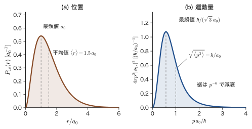
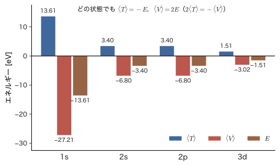
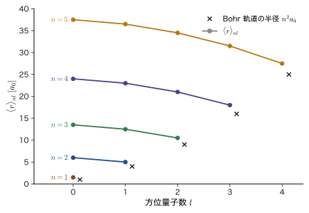
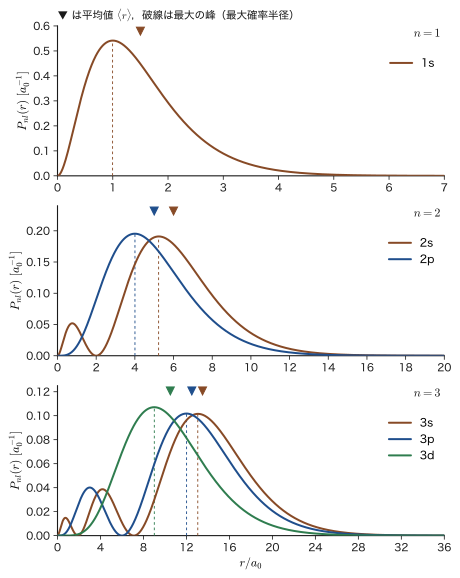
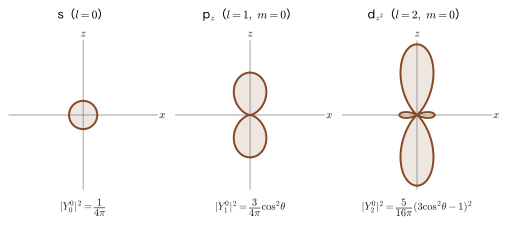
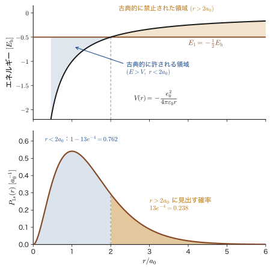
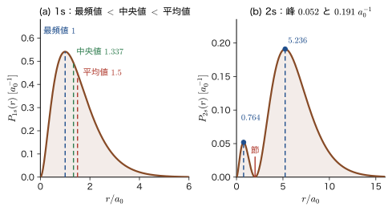

第17章水素原子（3）— 電子はどこにいるか
Bohr（ボーア）の原子模型（第5章 5.3節）では，水素原子の電子は原子核から $a_0=52.9\ \mathrm{pm}$ の距離を，毎秒 $2.19\times10^{6}\ \mathrm{m}$ の速さで円を描いて回っていた．半径も速さもはっきりした値をもつ，惑星のような描像である．ところが前の 2 章で Schrödinger（シュレーディンガー）方程式を解いて得た波動関数 $\psi_{nlm}(r,\theta,\varphi)$ には，そのような「軌道」は現れない．波動関数が教えてくれるのは，Born（ボルン）の確率解釈（第8章 8.1節）のとおり，電子を見いだす確率の分布 $\lvert\psi\rvert^2$ だけである．そうすると，「電子はどこにいるのか」「どれだけの速さで動いているのか」という素朴な問いには，1 つの数値では答えられない．答えられるのは，確率分布から計算される期待値（平均値）や，分布の山の位置である．
この章では，水素原子の 1s，2s，2p，3s，3d などの状態について，運動エネルギー $\expval{T}$，ポテンシャルエネルギー $\expval{V}$，運動量の 2 乗 $\expval{p^2}$，半径 $\expval{r}$ を，積分を 1 行ずつ計算して求める．すると，Bohr の模型で古典的に得られた関係——運動エネルギーは全エネルギーの符号を変えたもの，ポテンシャルエネルギーは全エネルギーのちょうど 2 倍——が，量子力学の期待値としてもそっくり成り立つことがわかる．これはビリアルの定理の帰結である．同時に，古典力学との違いも見えてくる．電子の速さ（正確には運動量の大きさの実効値）は光速のおよそ $1/137$ だが，原子番号の大きな原子では光速の半分を超え，金が黄色い理由につながる．また，「最も見いだされやすい半径」（最大確率半径，1s では Bohr 半径 $a_0$）と「平均の半径」（$1.5\,a_0$）は一致せず，分布の形——動径分布関数——を見ないと電子の広がりはつかめない．
この章で得られる結果は，後の章の土台になる．同じ主量子数でも $l$ が小さいほど電子が原子核の近くまで入り込む（浸透）という事実は，遮蔽と多電子原子の電子配置（第18章）に，$\expval{1/r^3}$ はスピン軌道相互作用の大きさ（第IV部）に，$\expval{r^4}$ は結晶場の強さ $Dq$（第44章）に，ビリアルの定理は変分原理（第VI部）に，それぞれつながる．
- 水素原子の 1s，2p，3d 軌道の $\expval{T}$，$\expval{V}$，$\expval{p^2}$ を，角度積分と動径積分に分けて，行を飛ばさずに計算できること．結果が $\expval{T}=-E_n$，$\expval{V}=2E_n$，$\expval{p^2}=(Z\hbar/na_0)^2$ の形にまとまること
- $\hat{\bm p}\psi_{1s}=(i\hbar/a_0)\bm{e}_r\psi_{1s}$ が固有値方程式ではないこと，$\expval{\bm{p}}=\bm{0}$ であっても $\sqrt{\expval{p^2}}=\hbar/a_0$ が運動量の大きさを与えること，電子の速さが $Z\alpha c/n$ で与えられること
- ビリアルの定理 $2\expval{T}=s\expval{V}$（$V\propto r^{s}$）を，交換子 $[\hat{H},\hat{\bm{r}}\cdot\hat{\bm{p}}]$ とスケール変換の 2 通りで証明し，Coulomb ポテンシャル，調和振動子，自由電子気体の圧力に応用できること
- 積分公式 $\displaystyle\int_0^\infty r^Ne^{-2r/(na_0)}\dd r=N!\,(na_0/2)^{N+1}$ を部分積分で導き，$\expval{r}_{1s}=\tfrac32a_0$，$\expval{r}_{2s}=6a_0$，$\expval{r}_{2p}=5a_0$，$\expval{r}_{3s}=\tfrac{27}{2}a_0$ を計算できること
- 動径分布関数 $P_{nl}(r)=r^2R_{nl}^2$ と球面分布関数 $\lvert Y_l^m\rvert^2$ の意味，山の数 $n-l$，最大確率半径（1s は $a_0$，2s は $(3\pm\sqrt5)a_0$，$l=n-1$ は $n^2a_0$），最頻値・中央値・平均値の違いを説明できること
- $\expval{r}_{nl}=\dfrac{a_0}{2Z}\bigl[3n^2-l(l+1)\bigr]$ を Laguerre 多項式の性質から導き，$\expval{r^2}$，$\expval{1/r}$，$\expval{1/r^2}$，$\expval{1/r^3}$，$\expval{r^4}$ を Kramers の漸化式から求めて，Rydberg 原子の大きさを見積もれること
- 運動エネルギー演算子を動径運動量の項と遠心力の項に分け，$\expval{T}$ の内訳（1s は全部が動径方向の運動，2p では 3 分の 1）を求められること
もとにしたノート：望月泰英『物理学ノート 量子力学2』 pp. 53–58．
17.1 運動エネルギーと運動量の期待値 — 1s 軌道
17.1.1 期待値の復習と記号
第15章と第16章で，水素原子の定常状態の波動関数 $\psi_{nlm}(r,\theta,\varphi)=R_{nl}(r)\,Y_l^m(\theta,\varphi)$ とエネルギー $E_n$ が求まった．この章では，その波動関数を使って，電子の運動を特徴づける量を読み出す．規格化された状態 $\psi$ にある系で，物理量 $A$ の測定を多数回くり返したときの平均値が期待値 $\expval{A}$ である（第8章 8.2節）．3 次元の球座標では，
\begin{equation} \expval{A}=\int\psi^*\,\hat{A}\,\psi\ \dd^3r =\int_0^{2\pi}\!\!\int_0^{\pi}\!\!\int_0^{\infty}\psi^*\,\hat{A}\,\psi\ r^2\sin\theta\,\dd r\,\dd\theta\,\dd\varphi \label{eq:17-expval} \end{equation}と計算する．体積要素 $\dd^3r=r^2\sin\theta\,\dd r\,\dd\theta\,\dd\varphi$ は，球座標への変数変換の Jacobi 行列式から出る（大学数学 第7章 7.3，17.6.1 節でも幾何学的に説明する）．なお，期待値の記号は，括弧の中に物理量の名前だけを書く（たとえば $\expval{T}$ は，運動エネルギーの演算子 $\hat{T}$ の期待値 $\expval{\hat{T}}=\int\psi^*\hat{T}\psi\,\dd^3r$ の略記である）．期待値そのものは測定で得られる実数値の平均で，演算子ではないから，ハットを付けない．
記号：$a_0$，$K$，そして $h$ 形と $\hbar$ 形
この章では，Bohr 半径を $$a_0=\frac{4\pi\varepsilon_0\hbar^2}{m_{\mathrm e}e_0^2}=5.291\,77\times10^{-11}\ \mathrm{m}$$ と書く（関連シミュレーター（hydrogen 他）では $a_{\mathrm B}$ と書かれているが，同じ量である）．Coulomb 力の強さを表す定数として $$K\equiv\frac{e_0^2}{4\pi\varepsilon_0}=14.3996\ \mathrm{eV\,\text{Å}}=2.3071\times10^{-28}\ \mathrm{J\,m}$$ を導入すると，$a_0=\hbar^2/(m_{\mathrm e}K)$ であり，水素様原子（核電荷 $+Ze_0$）のエネルギーは $$E_n=-\frac{Z^2K}{2a_0n^2}=-\frac{m_{\mathrm e}e_0^4}{8\varepsilon_0^2h^2}\frac{Z^2}{n^2}=-\frac{m_{\mathrm e}e_0^4}{2(4\pi\varepsilon_0)^2\hbar^2}\frac{Z^2}{n^2}=-13.606\ \mathrm{eV}\times\frac{Z^2}{n^2}$$ である（$h$ 形と $\hbar$ 形の関係は $\hbar=h/2\pi$ から出る）．また $K/a_0=E_{\mathrm h}=27.211\ \mathrm{eV}$（Hartree エネルギー）は，1s 準位の絶対値 $13.606\ \mathrm{eV}$ のちょうど 2 倍である．以下では，計算の見通しのために $K$ と $a_0$ で書き，結果は $h$ 形と $\hbar$ 形でも併記する．
まず最も単純な 1s 軌道（$n=1$，$l=0$，$m=0$，$Z=1$）を調べる．波動関数とエネルギーは
\begin{equation} \psi_{1,0,0}(r,\theta,\varphi)=\frac{1}{\sqrt{\pi a_0^3}}\,e^{-r/a_0},\qquad E_1=-\frac{m_{\mathrm e}e_0^4}{8\varepsilon_0^2h^2}=-\frac{K}{2a_0} \label{eq:17-psi1s} \end{equation}である（$e$ はネイピア数．全体の符号は位相の任意性で，以下の期待値には影響しないので，原点で正にとる）．角度によらないので $l=0$ の $Y_0^0=1/\sqrt{4\pi}$ と $R_{10}=2a_0^{-3/2}e^{-r/a_0}$ の積になっている．規格化の確認：$\displaystyle\int\lvert\psi\rvert^2\dd^3r=\dfrac{4\pi}{\pi a_0^3}\int_0^\infty r^2e^{-2r/a_0}\dd r=\dfrac{4}{a_0^3}\cdot\dfrac{a_0^3}{4}=1$（次項の公式 \eqref{eq:17-intformula} で $N=2$，$n=1$）．
17.1.2 積分公式
これから何度も，$r^N$ と指数関数 $e^{-2r/(na_0)}$ の積の積分が出てくる．次の公式が計算を一気に楽にする．
公式17.1 動径積分の基本公式
$n$ を正の数，$N=0,1,2,\dots$ を整数とするとき，
\begin{equation} \int_0^\infty r^N\,e^{-\frac{2r}{na_0}}\,\dd r=N!\left(\frac{na_0}{2}\right)^{N+1} \label{eq:17-intformula} \end{equation}が成り立つ．
たとえば $N=0$ なら，左辺は $\left[-\dfrac{na_0}{2}e^{-2r/(na_0)}\right]_0^\infty=\dfrac{na_0}{2}$，右辺も $0!\,(na_0/2)^1=na_0/2$ で一致する．$N=1,2$ は本節の計算に使う：$\displaystyle\int_0^\infty re^{-2r/a_0}\dd r=1!\left(\dfrac{a_0}{2}\right)^2=\dfrac{a_0^2}{4}$，$\displaystyle\int_0^\infty r^2e^{-2r/a_0}\dd r=2!\left(\dfrac{a_0}{2}\right)^3=\dfrac{a_0^3}{4}$（どちらも $n=1$）．一般の $N$ での証明は，部分積分の漸化式による（17.5.1 節）．これは AD 02 の Gamma 関数 $\Gamma(N+1)=N!$（第32章 32.2）で $t=2r/(na_0)$ と置換すれば $\dfrac{(na_0)^{N+1}}{2^{N+1}}\displaystyle\int_0^\infty t^Ne^{-t}\dd t$ となることと同じである．
17.1.3 運動エネルギーの期待値 $\expval{T}$
運動エネルギーの演算子は $\hat{T}=-\dfrac{\hbar^2}{2m_{\mathrm e}}\nabla^2$ である．これを直接 $e^{-r/a_0}$ に作用させて積分してもよい（例題17.1）が，$\psi$ が Schrödinger 方程式 $\hat{H}\psi=E\psi$ の解であることを使うと計算がずっと簡単になる．$\hat{H}=\hat{T}+\hat{V}$，$\hat{V}=-K/r$ だから，
\begin{equation} \hat{T}\psi_{1,0,0}=(E_1-\hat{V})\psi_{1,0,0}=\left(E_1+\frac{K}{r}\right)\psi_{1,0,0} \qquad\Bigl(\text{すなわち}\ \ \hat{T}\to E_1+\frac{1}{4\pi\varepsilon_0}\frac{e_0^2}{r}\Bigr) \label{eq:17-Tpsi} \end{equation}である．ここで右辺は微分を含まない「掛け算」になっている．
注意：$\hat{T}=E_1+K/r$ が成り立つのは $\psi$ に作用させたときだけ
式 \eqref{eq:17-Tpsi} は，$\hat{T}$ が「$E_1+K/r$ という掛け算」に等しいという演算子の恒等式ではない．$\hat{T}$ は 2 階の微分演算子で，任意の関数 $f$ に対して $\hat{T}f=(E_1+K/r)f$ とはならない．等式が成り立つのは，Schrödinger 方程式の解 $\psi_{1,0,0}$ に作用させたときだけである．したがって，この置き換えができるのは期待値 $\int\psi^*\hat{T}\psi\,\dd^3r$ のように，$\hat{T}$ が右端の $\psi$ に作用している場合に限られる．
式 \eqref{eq:17-expval} に代入する．被積分関数は $r$ だけの関数なので，角度積分は $\displaystyle\int_0^{2\pi}\dd\varphi\int_0^\pi\sin\theta\,\dd\theta=2\pi\times2=4\pi$ となる（球の全立体角）．
導出：1s 軌道の $\expval{T}$
$$ \begin{aligned} \expval{T}&=\int_0^{2\pi}\!\!\int_0^{\pi}\!\!\int_0^{\infty}\psi^*\,\hat{T}\psi\,r^2\sin\theta\,\dd r\,\dd\theta\,\dd\varphi =\int_0^{2\pi}\!\!\int_0^{\pi}\!\!\int_0^{\infty}\Bigl(E_1+\frac{K}{r}\Bigr)\psi^2\,r^2\sin\theta\,\dd r\,\dd\theta\,\dd\varphi\\ &=4\pi\int_0^\infty\Bigl(E_1r^2+K\,r\Bigr)\psi^2\,\dd r \qquad(\text{角度積分 }4\pi\text{ を外に出し，}(E_1+K/r)r^2=E_1r^2+Kr\text{ とした})\\ &=\frac{4\pi}{\pi a_0^3}\int_0^\infty\Bigl(E_1r^2e^{-2r/a_0}+K\,r\,e^{-2r/a_0}\Bigr)\dd r =\frac{4}{a_0^3}\int_0^\infty\Bigl(E_1r^2e^{-2r/a_0}+K\,r\,e^{-2r/a_0}\Bigr)\dd r\qquad(\psi^2=e^{-2r/a_0}/\pi a_0^3)\\ &=\frac{4}{a_0^3}\left(E_1\cdot\frac{a_0^3}{4}+K\cdot\frac{a_0^2}{4}\right) \qquad(\text{公式17.1 で }N=2,\ N=1)\\ &=E_1+\frac{K}{a_0}=-\frac{K}{2a_0}+\frac{K}{a_0}=+\frac{K}{2a_0}=-E_1 . \end{aligned} $$$h$ 形で書き直すには，$\dfrac{K}{a_0}=\dfrac{e_0^2}{4\pi\varepsilon_0}\cdot\dfrac{m_{\mathrm e}e_0^2}{4\pi\varepsilon_0\hbar^2}=\dfrac{m_{\mathrm e}e_0^4}{16\pi^2\varepsilon_0^2\hbar^2}=\dfrac{m_{\mathrm e}e_0^4}{4\varepsilon_0^2h^2}$ を使う（$\hbar^2=h^2/4\pi^2$）．すると上の最後の行は，
$$ \expval{T}=-\frac{m_{\mathrm e}e_0^4}{8\varepsilon_0^2h^2}+\frac{e_0^2}{4\pi\varepsilon_0a_0}=-\frac{m_{\mathrm e}e_0^4}{8\varepsilon_0^2h^2}+\frac{m_{\mathrm e}e_0^4}{4\varepsilon_0^2h^2}=+\frac{m_{\mathrm e}e_0^4}{8\varepsilon_0^2h^2} $$（導出終わり）
結果は，$\expval{T}=K/(2a_0)=13.606\ \mathrm{eV}$（$=2.180\times10^{-18}\ \mathrm{J}$）である．電子は，結合エネルギー $13.6\ \mathrm{eV}$ と同じ大きさの運動エネルギーをもって動き回っている．全エネルギー $E_1=-13.6\ \mathrm{eV}$ は運動エネルギー $+13.6\ \mathrm{eV}$ とポテンシャルエネルギーの和なので，ポテンシャルエネルギーは $-27.2\ \mathrm{eV}$ になっているはずである．次にそれを確かめる．
17.1.4 ポテンシャルエネルギーの期待値 $\expval{V}$
ポテンシャルエネルギーの演算子は $\hat{V}=-\dfrac{1}{4\pi\varepsilon_0}\dfrac{e_0^2}{r}=-\dfrac{K}{r}$（掛け算）である．
導出：1s 軌道の $\expval{V}$
$$ \begin{aligned} \expval{V}&=\int_0^{2\pi}\!\!\int_0^{\pi}\!\!\int_0^{\infty}\psi^*\,\hat{V}\psi\,r^2\sin\theta\,\dd r\,\dd\theta\,\dd\varphi =-4\pi\int_0^\infty\frac{K}{r}\,\psi^2\,r^2\,\dd r=-4\pi K\int_0^\infty r\,\psi^2\,\dd r\\ &=-\frac{4\pi K}{\pi a_0^3}\int_0^\infty r\,e^{-2r/a_0}\dd r =-\frac{4K}{a_0^3}\cdot\frac{a_0^2}{4}=-\frac{K}{a_0}=-\frac{m_{\mathrm e}e_0^4}{4\varepsilon_0^2h^2}=2E_1 . \end{aligned} $$（導出終わり）
$\expval{V}=-K/a_0=-E_{\mathrm h}=-27.211\ \mathrm{eV}$ で，たしかに全エネルギー $E_1$ の 2 倍である．そして $\expval{T}+\expval{V}=\dfrac{K}{2a_0}-\dfrac{K}{a_0}=-\dfrac{K}{2a_0}=E_1$ となって，全エネルギーが再現される（期待値の和が固有値になる：$\expval{H}=E_1$）．ただし $\expval{T}$ は式 \eqref{eq:17-Tpsi} を使って $E_1-\expval{V}$ の形で求めたので，この和が $E_1$ になるのは定義から当然であり，積分値 $\expval{1/r}=1/a_0$ の独立な検算にはならない．確かめられているのは，規格化 $\int\psi^2\dd^3r=1$ が正しいことである．積分値そのものの独立な検算は，Schrödinger 方程式を使わない例題17.1（勾配の 2 乗）で行う．
イメージ：古典的な円運動でも $T=-E$，$V=2E$
電荷 $-e_0$ の電子が，$+e_0$ の核のまわりを半径 $r$ の円運動するとき，向心力は Coulomb 力なので $m_{\mathrm e}v^2/r=K/r^2$，すなわち運動エネルギーは $T=\tfrac12m_{\mathrm e}v^2=K/(2r)$ である．ポテンシャルエネルギーは $V=-K/r=-2T$ で，全エネルギーは $E=T+V=-K/(2r)=-T$，$V=2E$ となる（AD 03 第8章 8.4節）．量子力学の期待値でも同じ関係 $\expval{T}=-E_1$，$\expval{V}=2E_1$ が成り立つ．これが偶然でなく，Coulomb ポテンシャルという $1/r$ の形から出る一般的な帰結（ビリアルの定理）であることは 17.4 節で示す．
17.1.5 運動量の 2 乗と電子の速さ
運動量の 2 乗の演算子は $\hat{p}^2=\hat{\bm p}\cdot\hat{\bm p}=-\hbar^2\nabla^2$ で，$\hat{T}=\hat{p}^2/2m_{\mathrm e}$ だから $\hat{p}^2=2m_{\mathrm e}\hat{T}$ である．期待値をとると
\begin{equation} \expval{p^2}=2m_{\mathrm e}\expval{T}=m_{\mathrm e}\cdot\frac{K}{a_0}=\frac{m_{\mathrm e}^2K^2}{\hbar^2}=\frac{\hbar^2}{a_0^2}=\frac{m_{\mathrm e}^2e_0^4}{4\varepsilon_0^2h^2}\qquad(\text{1s 軌道}) \label{eq:17-p2-1s} \end{equation}である（途中で $a_0=\hbar^2/(m_{\mathrm e}K)$ から $K/a_0=m_{\mathrm e}K^2/\hbar^2$ を使った）．運動量の大きさの目安は $\sqrt{\expval{p^2}}=\hbar/a_0=m_{\mathrm e}e_0^2/(2\varepsilon_0h)=1.993\times10^{-24}\ \mathrm{kg\,m/s}$ である．これを電子の質量で割ると，速さの目安が得られる．
公式17.2 1s 軌道の電子の速さの目安（実効値）
\begin{equation} v_{\mathrm{rms}}=\sqrt{\expval{v^2}}=\frac{\sqrt{\expval{p^2}}}{m_{\mathrm e}}=\frac{\hbar}{m_{\mathrm e}a_0}=\frac{e_0^2}{4\pi\varepsilon_0\hbar}=\frac{e_0^2}{2\varepsilon_0h}=\alpha c=2.1877\times10^{6}\ \mathrm{m/s}\approx\frac{1}{137}\times2.998\times10^{8}\ \mathrm{m/s} \label{eq:17-v1s} \end{equation}ここで $\alpha=e_0^2/(4\pi\varepsilon_0\hbar c)=1/137.036$ は微細構造定数，$c$ は真空中の光速である．以下では，この実効値 $v_{\mathrm{rms}}$ を単に速さ $v$ と書く．
速さは光速の $0.73\,\%$ にすぎない．したがって水素原子の電子は，非相対論的な Schrödinger 方程式で十分よく記述できる．なお，Bohr の模型で計算した $n=1$ の軌道の速さも同じ $\alpha c$ であった（第5章 5.3節）．これは，前項のイメージの箱で見たように，古典的な円運動でも量子力学の期待値でも $T=-E$ が成り立ち，同じ大きさの運動エネルギー，したがって同じ速さが出るからである．
注意：これは「速度の平均」ではなく「速さの実効値」
式 \eqref{eq:17-v1s} は，$\expval{p^2}$ の平方根を $m_{\mathrm e}$ で割った量，すなわち速さの 2 乗平均の平方根 $\sqrt{\expval{v^2}}$ である．「速度ベクトルの期待値」$\expval{\bm{v}}=\expval{\bm p}/m_{\mathrm e}$ ではない．次項で見るように，$\expval{\bm p}=\bm 0$ なので，速度ベクトルの期待値は 0 であり，向きが四方八方に均等に分布しているために平均をとると打ち消し合う．速さそのものは 0 ではなく，その大きさの目安が $\hbar/(m_{\mathrm e}a_0)$ なのである．
17.1.6 球座標のナブラ演算子と運動量演算子
運動量の期待値そのものは，どうなるのだろうか．運動量演算子は $\hat{\bm{p}}=\dfrac{\hbar}{i}\nabla=-i\hbar\nabla$ である．球座標では，位置 $(r,\theta,\varphi)$ の点に，互いに直交する 3 つの単位ベクトル $\bm{e}_r$（動径方向，$r$ が増える向き），$\bm{e}_\theta$（$\theta$ が増える向き），$\bm{e}_\varphi$（$\varphi$ が増える向き）をとる（図17.1）．デカルト座標の成分で書けば $\bm{e}_r=(\sin\theta\cos\varphi,\sin\theta\sin\varphi,\cos\theta)$，$\bm{e}_\theta=(\cos\theta\cos\varphi,\cos\theta\sin\varphi,-\sin\theta)$，$\bm{e}_\varphi=(-\sin\varphi,\cos\varphi,0)$ である．これらの向きは点の位置ごとに違う．
位置を $\dd r$，$\dd\theta$，$\dd\varphi$ だけ動かしたときの変位ベクトルは $\dd\bm{r}=\dd r\,\bm{e}_r+r\,\dd\theta\,\bm{e}_\theta+r\sin\theta\,\dd\varphi\,\bm{e}_\varphi$ である（$\theta$ が $\dd\theta$ 変わると子午線に沿って長さ $r\dd\theta$，$\varphi$ が $\dd\varphi$ 変わると，半径 $r\sin\theta$ の緯線に沿って長さ $r\sin\theta\,\dd\varphi$ だけ動く）．関数 $f$ の変化 $\dd f=\dfrac{\partial f}{\partial r}\dd r+\dfrac{\partial f}{\partial\theta}\dd\theta+\dfrac{\partial f}{\partial\varphi}\dd\varphi$ が $\nabla f\cdot\dd\bm{r}$ に等しいことから，各成分を比べて
\begin{equation} \nabla f=\frac{\partial f}{\partial r}\,\bm{e}_r+\frac{1}{r}\frac{\partial f}{\partial\theta}\,\bm{e}_\theta+\frac{1}{r\sin\theta}\frac{\partial f}{\partial\varphi}\,\bm{e}_\varphi \label{eq:17-nabla} \end{equation}を得る（大学数学 第16章 16.5 と同じ）．運動量演算子は $\hat{\bm p}=\dfrac{\hbar}{i}\nabla$ だから，$\bm{e}_r$，$\bm{e}_\theta$，$\bm{e}_\varphi$ の 3 つの成分は $\dfrac{\hbar}{i}\dfrac{\partial}{\partial r}$，$\dfrac{\hbar}{i}\dfrac{1}{r}\dfrac{\partial}{\partial\theta}$，$\dfrac{\hbar}{i}\dfrac{1}{r\sin\theta}\dfrac{\partial}{\partial\varphi}$ である．
1s 軌道に作用させてみよう．$\psi_{1,0,0}$ は $r$ だけの関数で，$\theta$ と $\varphi$ には依存しない（$\partial\psi/\partial\theta=\partial\psi/\partial\varphi=0$）．また $\dfrac{\partial\psi_{1,0,0}}{\partial r}=-\dfrac{1}{a_0}\psi_{1,0,0}$ である．したがって
$$ \begin{aligned} \hat{\bm p}\,\psi_{1,0,0}&=\frac{\hbar}{i}\left(\frac{\partial}{\partial r}\bm{e}_r+\frac{1}{r}\frac{\partial}{\partial\theta}\bm{e}_\theta+\frac{1}{r\sin\theta}\frac{\partial}{\partial\varphi}\bm{e}_\varphi\right)\frac{e^{-r/a_0}}{\sqrt{\pi a_0^3}}\\ &=\frac{\hbar}{i}\left(-\frac{1}{a_0}\,\bm{e}_r+\frac{1}{r}\cdot0\cdot\bm{e}_\theta+\frac{1}{r\sin\theta}\cdot0\cdot\bm{e}_\varphi\right)\psi_{1,0,0}\\ &=\frac{i\hbar}{a_0}\,\bm{e}_r\,\psi_{1,0,0}\qquad\Bigl(\text{途中で }\frac{1}{i}\cdot\Bigl(-\frac{1}{a_0}\Bigr)=\frac{i}{a_0}\text{ を使った}\Bigr) \end{aligned} $$となる．
注意：$\hat{\bm p}\psi_{1s}=(i\hbar/a_0)\bm{e}_r\psi_{1s}$ は固有値方程式ではない
この結果を「1s 軌道は運動量演算子の固有関数で，固有値は $i\hbar\bm{e}_r/a_0$ である」と読んではいけない．固有値方程式 $\hat{\bm p}\psi=\bm{p}\,\psi$ の右辺の $\bm{p}$ は位置によらない定数のベクトルでなければならない（たとえば平面波 $e^{i\bm{k}\cdot\bm{r}}$ では $\hat{\bm p}e^{i\bm{k}\cdot\bm{r}}=\hbar\bm{k}\,e^{i\bm{k}\cdot\bm{r}}$）．ところが $\bm{e}_r$ は位置によって向きが変わる（図17.1）．したがって $\psi_{1,0,0}$ は $\hat{\bm p}$ の固有関数ではなく，1s 状態の運動量は 1 つの値に定まっていない．この式が本当に教えているのは，「1s 軌道の各点で，$\hat{\bm p}\psi$ の大きさと $\psi$ の大きさの比は $\lvert\hat{\bm p}\psi\rvert/\psi=\hbar/a_0$ で，向きは動径方向」ということである．
運動量の期待値 $\expval{\bm p}$ は，次のように 0 になる．
導出：1s 軌道の $\expval{\bm p}=\bm 0$
式 \eqref{eq:17-expval} に $\hat{\bm p}\psi=(i\hbar/a_0)\bm{e}_r\psi$ を代入すると，$\psi$ は実数なので
$$ \expval{\bm p}=\int\psi\,\frac{i\hbar}{a_0}\bm{e}_r\psi\ r^2\sin\theta\,\dd r\,\dd\theta\,\dd\varphi =\frac{i\hbar}{a_0}\int_0^\infty\psi^2\,r^2\dd r\ \int_0^{2\pi}\!\!\int_0^{\pi}\bm{e}_r\,\sin\theta\,\dd\theta\,\dd\varphi $$と，動径積分と，単位ベクトル $\bm{e}_r$ の全立体角にわたる積分の積になる．$\bm{e}_r$ の各成分の角度積分は，たとえば $x$ 成分では $\displaystyle\int_0^{\pi}\sin^2\theta\,\dd\theta\int_0^{2\pi}\cos\varphi\,\dd\varphi=\dfrac{\pi}{2}\cdot0=0$，$y$ 成分では $\displaystyle\int_0^{2\pi}\sin\varphi\,\dd\varphi=0$，$z$ 成分では $\displaystyle\int_0^\pi\cos\theta\sin\theta\,\dd\theta\cdot2\pi=\Bigl[\dfrac{\sin^2\theta}{2}\Bigr]_0^\pi\cdot2\pi=0$ だから，$\displaystyle\int\bm{e}_r\,\dd\Omega=\bm{0}$ である（球面上で外向きの単位ベクトルを足し合わせると，反対向きのものと打ち消し合う）．よって $\expval{\bm p}=\bm 0$ である．
（導出終わり）
別の見方もある．運動量の期待値が実数でなければならないこと（$\hat{\bm p}$ がエルミートであること）を使うと，$\psi$ が実数のとき $\int\psi\,\hat{\bm p}\psi\,\dd^3r$ は純虚数になるから，実数であることと合わせて 0 でなければならない．一般に，実数の波動関数（や，パリティが定まった状態）の運動量の期待値は 0 である．また，$m\ne0$ の複素数の波動関数を含めて，任意の定常状態 $(n,l,m)$ では $\expval{\bm r}$ が時間によらないので，Ehrenfest の定理 $\dd\expval{\bm r}/\dd t=\expval{\bm p}/m_{\mathrm e}$（第9章 9.4節）から $\expval{\bm p}=\bm 0$ となる．
注意：$\bm{e}_r$ を積分の外に出してはいけない
$\expval{\bm p}$ の計算で，$\bm{e}_r$ を「定ベクトル」のつもりで積分の外に出し，$\psi^2r^2$ の動径積分だけを行うと，$\dfrac{4}{a_0^3}\cdot\dfrac{i\hbar}{a_0}\bm{e}_r\cdot\dfrac{a_0^3}{4}=\dfrac{i\hbar}{a_0}\bm{e}_r=i\dfrac{m_{\mathrm e}e_0^2}{2\varepsilon_0h}\bm{e}_r$ という形式的な結果が出る．しかしこれは $\expval{\bm p}$ ではない．$\bm{e}_r$ は積分変数 $(\theta,\varphi)$ の関数であり，積分の外には出せない．実際に積分すると 0 になる．ただし，この形式的な結果の大きさ $\hbar/a_0=m_{\mathrm e}e_0^2/(2\varepsilon_0h)$ は，先ほど式 \eqref{eq:17-p2-1s} で求めた運動量の大きさの目安 $\sqrt{\expval{p^2}}$ と同じである．これは偶然ではない．$\hat{\bm p}$ はエルミートなので $\expval{p^2}=\int(\hat{\bm p}\psi)^*\!\cdot(\hat{\bm p}\psi)\,\dd^3r$ と書け，$\lvert\hat{\bm p}\psi\rvert=(\hbar/a_0)\,\psi$ を代入すると $\expval{p^2}=(\hbar/a_0)^2\int\psi^2\dd^3r=\hbar^2/a_0^2$ となる．すなわち $\sqrt{\expval{p^2}}$ は，各点での $\lvert\hat{\bm p}\psi\rvert/\psi=\hbar/a_0$ を状態全体で 2 乗平均したもので，向きの打ち消し合い（$\expval{\bm p}=\bm 0$）の影響を受けない，運動量の大きさである．運動量の期待値そのものは $\expval{\bm p}=\bm 0$ で，運動量の大きさは $\sqrt{\expval{p^2}}=\hbar/a_0=\dfrac{m_{\mathrm e}e_0^2}{2\varepsilon_0h}$（速さに直せば式 \eqref{eq:17-v1s}．向きは四方八方に等しく分布する）と，区別して理解する必要がある．
例題17.1 $\expval{T}$ を勾配の 2 乗から求める
$\expval{T}=\dfrac{\hbar^2}{2m_{\mathrm e}}\displaystyle\int\lvert\nabla\psi\rvert^2\dd^3r$ を使って，1s 軌道の $\expval{T}$ を，式 \eqref{eq:17-Tpsi}（Schrödinger 方程式）を使わずに求めよ．
解答 $\expval{T}=\displaystyle\int\psi\Bigl(-\frac{\hbar^2}{2m_{\mathrm e}}\nabla^2\psi\Bigr)\dd^3r$ を，3 次元の部分積分（Green の公式）で書き換える．$\nabla\cdot(\psi\nabla\psi)=\lvert\nabla\psi\rvert^2+\psi\nabla^2\psi$ を全空間で積分し，発散定理で表面項を落とす（$\psi$ は $r\to\infty$ で指数関数的に $0$ になるので表面項は $0$）と，$\expval{T}=\dfrac{\hbar^2}{2m_{\mathrm e}}\displaystyle\int\lvert\nabla\psi\rvert^2\dd^3r$ となる．1s 軌道では，式 \eqref{eq:17-nabla} で $\theta$，$\varphi$ の成分が 0 だから $\nabla\psi=\dfrac{\partial\psi}{\partial r}\bm{e}_r=-\dfrac{1}{a_0}\psi\,\bm{e}_r$ で，$\lvert\nabla\psi\rvert^2=\psi^2/a_0^2$ である．規格化条件 $\int\psi^2\dd^3r=1$ を使って，
$$ \expval{T}=\frac{\hbar^2}{2m_{\mathrm e}}\cdot\frac{1}{a_0^2}\int\psi^2\dd^3r=\frac{\hbar^2}{2m_{\mathrm e}a_0^2}=\frac{K}{2a_0}\qquad\Bigl(\frac{\hbar^2}{m_{\mathrm e}a_0}=K\text{ より}\Bigr) $$となる．数値は $\dfrac{\hbar^2}{2m_{\mathrm e}a_0^2}=\dfrac{(1.0546\times10^{-34})^2}{2\times9.109\times10^{-31}\times(5.2918\times10^{-11})^2}\ \mathrm{J}=2.180\times10^{-18}\ \mathrm{J}=13.606\ \mathrm{eV}$ である．導出の本文で得た $-E_1=13.606\ \mathrm{eV}$ と一致する．同時に $\expval{p^2}=2m_{\mathrm e}\expval{T}=\hbar^2/a_0^2$ も，式 \eqref{eq:17-p2-1s} と一致する．
17.2 2pz 軌道と 3dz² 軌道 — 一般の $n$，$Z$ へ
17.2.1 2pz 軌道（$n=2$，$l=1$，$m=0$）
次に，$l\ne0$ の状態として，$z$ 軸方向にのびた 2pz 軌道を調べる．波動関数は $\psi_{2,1,0}=R_{21}(r)\,Y_1^0(\theta,\varphi)$，$R_{21}=\dfrac{1}{2\sqrt6}a_0^{-3/2}\dfrac{r}{a_0}e^{-r/2a_0}$，$Y_1^0=\sqrt{\dfrac{3}{4\pi}}\cos\theta$ で，積を計算して整理すると
\begin{equation} \psi_{2,1,0}(r,\theta,\varphi)=\frac{1}{8a_0^2}\sqrt{\frac{2}{\pi a_0}}\;r\,e^{-r/2a_0}\cos\theta,\qquad E_2=-\frac{m_{\mathrm e}e_0^4}{8\varepsilon_0^2h^2}\cdot\frac{1}{2^2}=-\frac{m_{\mathrm e}e_0^4}{32\varepsilon_0^2h^2}=-\frac{K}{8a_0} \label{eq:17-psi2pz} \end{equation}である（$\dfrac{1}{2\sqrt6}\sqrt{\dfrac{3}{4\pi}}=\dfrac{1}{4\sqrt{2\pi}}=\dfrac{1}{8}\sqrt{\dfrac{2}{\pi}}$ を使った）．確率密度は $\lvert\psi_{2,1,0}\rvert^2=\dfrac{1}{32\pi a_0^5}\,r^2e^{-r/a_0}\cos^2\theta$ である．$E_2=-3.401\ \mathrm{eV}$．
1s のときと違って，この波動関数は角度に依存するので，角度積分が 1 つの数にならない．そこで，角度積分と動径積分に分けて計算する．また，$\expval{V}$ は $1/r$ を掛けるだけで簡単に計算できるので，先に $\expval{V}$ を求め，$\expval{T}=E_2-\expval{V}$（$E_2=\expval{T}+\expval{V}$ より）として $\expval{T}$ を得る．
導出：2pz 軌道の $\expval{V}$，$\expval{T}$，$\expval{p^2}$
$$ \begin{aligned} \expval{V}&=\int_0^{2\pi}\!\!\int_0^{\pi}\!\!\int_0^{\infty}\psi^*\Bigl(-\frac{K}{r}\Bigr)\psi\;r^2\sin\theta\,\dd r\,\dd\theta\,\dd\varphi\\ &=-\frac{K}{32\pi a_0^5}\int_0^{2\pi}\!\dd\varphi\int_0^{\pi}\cos^2\theta\sin\theta\,\dd\theta\int_0^\infty\frac{1}{r}\,r^2e^{-r/a_0}\,r^2\,\dd r \qquad\Bigl(\text{被積分関数 }\lvert\psi\rvert^2\times\frac{1}{r}\times r^2\Bigr)\\ &=-\frac{K}{32\pi a_0^5}\cdot2\pi\cdot\frac{2}{3}\cdot\int_0^\infty r^3e^{-r/a_0}\dd r \qquad\Bigl(\textstyle\int_0^\pi\cos^2\theta\sin\theta\,\dd\theta=\bigl[-\tfrac{\cos^3\theta}{3}\bigr]_0^\pi=\tfrac23\Bigr)\\ &=-\frac{K}{32\pi a_0^5}\cdot2\pi\cdot\frac{2}{3}\cdot6a_0^4 \qquad(\text{公式17.1 で }N=3,\ n=2:\ 3!\,a_0^4=6a_0^4)\\ &=-\frac{K}{32\pi a_0^5}\cdot8\pi a_0^4=-\frac{K}{4a_0}=-\frac{e_0^2}{16\pi\varepsilon_0a_0}=-\frac{m_{\mathrm e}e_0^4}{16\varepsilon_0^2h^2}\quad(=2E_2=-6.803\ \mathrm{eV}). \end{aligned} $$したがって，$\expval{T}=E_2-\expval{V}=-\dfrac{K}{8a_0}+\dfrac{K}{4a_0}=\dfrac{K}{8a_0}=\dfrac{m_{\mathrm e}e_0^4}{32\varepsilon_0^2h^2}$（$=3.401\ \mathrm{eV}$）であり，
$$ \expval{p^2}=2m_{\mathrm e}\expval{T}=\frac{m_{\mathrm e}K}{4a_0}=\frac{\hbar^2}{4a_0^2}=\frac{m_{\mathrm e}^2e_0^4}{16\varepsilon_0^2h^2},\qquad \sqrt{\expval{p^2}}=\frac{\hbar}{2a_0}=\frac{m_{\mathrm e}e_0^2}{4\varepsilon_0h} $$（導出終わり）
運動量の期待値 $\expval{\bm p}$ は，2p 軌道でも $\bm 0$ である（$\psi_{2,1,0}$ は実数なので，17.1.6 節の「実数の波動関数では $\expval{\bm p}=\bm 0$」がそのまま使える．一般の $(n,l,m)$ の定常状態では，Ehrenfest の定理から $\expval{\bm p}=\bm 0$ である）．運動量の大きさの目安は，1s の半分の $\hbar/2a_0$ になり，したがって速さの目安は $\alpha c/2=1.09\times10^6\ \mathrm{m/s}$ である．主量子数が大きいほど電子の運動エネルギーが小さくなるのは，軌道が広がって電子が遅くなるためである．
17.2.2 3dz² 軌道（$n=3$，$l=2$，$m=0$）
3dz² 軌道（$m=0$ の 3d 軌道．第16章の $d_{z^2}$）の波動関数とエネルギーは，$R_{32}=\dfrac{4}{81\sqrt{30}}a_0^{-3/2}\Bigl(\dfrac{r}{a_0}\Bigr)^2e^{-r/3a_0}$，$Y_2^0=\sqrt{\dfrac{5}{16\pi}}\,(3\cos^2\theta-1)$ の積で，
\begin{equation} \psi_{3,2,0}(r,\theta,\varphi)=\frac{1}{81a_0^3}\sqrt{\frac{1}{6\pi a_0}}\;r^2e^{-r/3a_0}\,(3\cos^2\theta-1),\qquad E_3=-\frac{m_{\mathrm e}e_0^4}{8\varepsilon_0^2h^2}\cdot\frac{1}{3^2}=-\frac{m_{\mathrm e}e_0^4}{72\varepsilon_0^2h^2}=-\frac{K}{18a_0} \label{eq:17-psi3dz} \end{equation}である（$\dfrac{4}{81\sqrt{30}}\sqrt{\dfrac{5}{16\pi}}=\dfrac{1}{81\sqrt{6\pi}}$ を使った）．$E_3=-1.512\ \mathrm{eV}$．確率密度は $\lvert\psi_{3,2,0}\rvert^2=\dfrac{1}{2\cdot3^9\pi a_0^7}\,r^4e^{-2r/3a_0}(3\cos^2\theta-1)^2$ である（$81^2\cdot6=39366=2\cdot3^9$）．2pz と同じ手順で，先に $\expval{V}$ を求める．
導出：3dz² 軌道の $\expval{V}$，$\expval{T}$，$\expval{p^2}$
角度積分は，$u=\cos\theta$ とおくと $\displaystyle\int_0^\pi(3\cos^2\theta-1)^2\sin\theta\,\dd\theta=\int_{-1}^{1}(9u^4-6u^2+1)\,\dd u=\dfrac{18}{5}-4+2=\dfrac{8}{5}$ である．動径積分は，公式17.1 の $N=5$，$n=3$ で $\displaystyle\int_0^\infty r^5e^{-2r/3a_0}\dd r=5!\left(\dfrac{3a_0}{2}\right)^6$ となる．よって
$$ \begin{aligned} \expval{V}&=-K\cdot\frac{1}{2\cdot3^9\pi a_0^7}\cdot2\pi\int_0^{\pi}(3\cos^2\theta-1)^2\sin\theta\,\dd\theta\int_0^\infty\frac{1}{r}\,r^4e^{-2r/3a_0}\,r^2\,\dd r\\ &=-\frac{K}{2\cdot3^9\pi a_0^7}\cdot2\pi\cdot\frac{8}{5}\cdot5!\left(\frac{3a_0}{2}\right)^6 =-\frac{K}{2\cdot3^9\pi a_0^7}\cdot2\pi\cdot\frac{8}{5}\cdot120\cdot\frac{3^6a_0^6}{2^6}\\ &=-\frac{K}{2\cdot3^9\pi a_0^7}\cdot\frac{384\pi\cdot3^6a_0^6}{64}=-\frac{K\cdot6\cdot3^6}{2\cdot3^9a_0}=-\frac{K}{9a_0}=-\frac{e_0^2}{36\pi\varepsilon_0a_0}\quad(=2E_3=-3.023\ \mathrm{eV}). \end{aligned} $$したがって $\expval{T}=E_3-\expval{V}=-\dfrac{K}{18a_0}+\dfrac{K}{9a_0}=\dfrac{K}{18a_0}=\dfrac{m_{\mathrm e}e_0^4}{72\varepsilon_0^2h^2}$（$=1.512\ \mathrm{eV}$）で，
$$ \expval{p^2}=2m_{\mathrm e}\expval{T}=\frac{m_{\mathrm e}K}{9a_0}=\frac{\hbar^2}{9a_0^2}=\frac{m_{\mathrm e}^2e_0^4}{36\varepsilon_0^2h^2},\qquad \sqrt{\expval{p^2}}=\frac{\hbar}{3a_0}=\frac{m_{\mathrm e}e_0^2}{6\varepsilon_0h} $$（導出終わり）
17.2.3 結果の比較 — 一般の $n$ と原子番号 $Z$ へ
| 軌道 | $E_n$ | $\expval{V}$ | $\expval{T}$ | $\sqrt{\expval{p^2}}$ | 速さの目安 |
|---|---|---|---|---|---|
| 1s | $-\tfrac12E_{\mathrm h}=-13.606\ \mathrm{eV}$ | $-E_{\mathrm h}=-27.211\ \mathrm{eV}$ | $\tfrac12E_{\mathrm h}=13.606\ \mathrm{eV}$ | $\hbar/a_0$ | $\alpha c=2.188\times10^6\ \mathrm{m/s}$ |
| 2pz | $-\tfrac18E_{\mathrm h}=-3.401\ \mathrm{eV}$ | $-\tfrac14E_{\mathrm h}=-6.803\ \mathrm{eV}$ | $\tfrac18E_{\mathrm h}=3.401\ \mathrm{eV}$ | $\hbar/2a_0$ | $\alpha c/2=1.094\times10^6\ \mathrm{m/s}$ |
| 3dz² | $-\tfrac1{18}E_{\mathrm h}=-1.512\ \mathrm{eV}$ | $-\tfrac19E_{\mathrm h}=-3.023\ \mathrm{eV}$ | $\tfrac1{18}E_{\mathrm h}=1.512\ \mathrm{eV}$ | $\hbar/3a_0$ | $\alpha c/3=7.29\times10^5\ \mathrm{m/s}$ |
3 つの軌道の結果には，$l$ の値によらず共通の規則がある．すなわち，どの軌道でも
- $\expval{V}=2E_n$（ポテンシャルエネルギーの期待値は全エネルギーのちょうど 2 倍）
- $\expval{T}=-E_n$（運動エネルギーの期待値は全エネルギーの符号を変えたもの）
- $\sqrt{\expval{p^2}}=\dfrac{\hbar}{na_0}$（運動量の大きさの目安は $1/n$ に比例する）
となっている．原子核の電荷が $+Ze_0$ の水素様イオンでは，$K\to ZK$ と置き換えればよい．このとき Bohr 半径は $a_0\to a_0/Z$ に置き換わる（$a_0/Z=\hbar^2/(m_{\mathrm e}ZK)$）ので，波動関数は $\psi^{(Z)}(r)=Z^{3/2}\psi^{(1)}(Zr)$ のように原点に向かって縮む．エネルギーの期待値は $Z^2$ に比例し（$K/a_0\to Z^2K/a_0$），運動量の 2 乗は $\hbar^2/a_0^2\to Z^2\hbar^2/a_0^2$ となる．
公式17.3 水素様原子の $\expval{T}$，$\expval{V}$，$\expval{p^2}$，速さ
核電荷 $+Ze_0$ の水素様原子の状態 $\psi_{nlm}$（エネルギー $E_n=-Z^2K/(2a_0n^2)$）では，$l$，$m$ によらず，
\begin{equation} \expval{T}=-E_n=\frac{Z^2K}{2a_0n^2},\qquad\expval{V}=2E_n=-\frac{Z^2K}{a_0n^2},\qquad\expval{p^2}=\Bigl(\frac{Z\hbar}{na_0}\Bigr)^2=\frac{Z^2m_{\mathrm e}^2e_0^4}{4\varepsilon_0^2h^2n^2} \label{eq:17-Tn} \end{equation}である．運動量の期待値は $\expval{\bm p}=\bm 0$ で，運動量の大きさの目安と速さの目安は
\begin{equation} \sqrt{\expval{p^2}}=\frac{m_{\mathrm e}e_0^2Z}{2\varepsilon_0hn}=\frac{Z\hbar}{na_0},\qquad v=\frac{\sqrt{\expval{p^2}}}{m_{\mathrm e}}=\frac{e_0^2Z}{2\varepsilon_0hn}=\frac{Z}{n}\,\alpha c \label{eq:17-vZn} \end{equation}式 \eqref{eq:17-Tn} は，1s，2pz，3dz² の 3 つの例の計算から読み取れる規則で，任意の $(n,l,m)$ での証明は，17.4.1 節のビリアルの定理から出る（$\expval{T}=-E_n$，$\expval{V}=2E_n$，$\expval{p^2}=2m_{\mathrm e}\expval{T}$ が一般に導かれる）．
考察：原子番号が大きいと電子は速い
式 \eqref{eq:17-vZn} は，$n=1$ の電子の速さが原子核の電荷 $Z$ に比例して増えることを示している．核の電荷が大きいほど，強い引力に引かれて電子は速く動く（Bohr 半径が $a_0/Z$ に縮むのでエネルギーが増え，したがって速さも増える）．さらに，特殊相対性理論（AD 03 第54章 54.6節）によれば，速さ $v$ で動く電子の質量は静止質量 $m_{\mathrm e}$ より重くなり，
$$ m=\frac{m_{\mathrm e}}{\sqrt{1-(v/c)^2}}=\gamma m_{\mathrm e} $$と与えられる．$v/c=Z\alpha$ が 1 に比べて小さくないほど，質量の増加は無視できなくなる．
例題17.2 2pz の $\expval{T}$ を勾配から直接求める
2pz 軌道 $\psi=N\,z\,e^{-r/2a_0}$（$N^2=1/(32\pi a_0^5)$，$z=r\cos\theta$）について，$\expval{T}=\dfrac{\hbar^2}{2m_{\mathrm e}}\displaystyle\int\lvert\nabla\psi\rvert^2\dd^3r$ から $\expval{T}$ を求め，$E_2-\expval{V}=K/(8a_0)$ と一致することを確かめよ．
解答 積の微分より $\nabla\psi=N\bigl[e^{-r/2a_0}\nabla z+z\nabla e^{-r/2a_0}\bigr]=Ne^{-r/2a_0}\bigl[\bm{e}_z-\dfrac{z}{2a_0}\bm{e}_r\bigr]$ である（$\nabla z=\bm{e}_z$，$\nabla e^{-r/2a_0}=-\dfrac{1}{2a_0}e^{-r/2a_0}\bm{e}_r$）．内積 $\bm{e}_z\cdot\bm{e}_r=\cos\theta=z/r$ を使って，
$$ \lvert\nabla\psi\rvert^2=N^2e^{-r/a_0}\Bigl[1-\frac{z}{a_0}\cdot\frac{z}{r}+\frac{z^2}{4a_0^2}\Bigr]=N^2e^{-r/a_0}\Bigl[1-\frac{r}{a_0}\cos^2\theta+\frac{r^2}{4a_0^2}\cos^2\theta\Bigr]. $$角度積分は $\displaystyle\int\dd\Omega=4\pi$，$\displaystyle\int\cos^2\theta\,\dd\Omega=\dfrac{4\pi}{3}$ なので，
$$ \int\lvert\nabla\psi\rvert^2\dd^3r=4\pi N^2\int_0^\infty e^{-r/a_0}\Bigl[1-\frac{r}{3a_0}+\frac{r^2}{12a_0^2}\Bigr]r^2\dd r =4\pi N^2\Bigl[2a_0^3-\frac{6a_0^4}{3a_0}+\frac{24a_0^5}{12a_0^2}\Bigr]=4\pi N^2\cdot2a_0^3 $$（公式17.1 の $N=2,3,4$，$n=2$：$2a_0^3$，$6a_0^4$，$24a_0^5$）．$N^2=1/(32\pi a_0^5)$ を代入すると $\dfrac{8\pi a_0^3}{32\pi a_0^5}=\dfrac{1}{4a_0^2}$．よって $\expval{T}=\dfrac{\hbar^2}{2m_{\mathrm e}}\cdot\dfrac{1}{4a_0^2}=\dfrac{\hbar^2}{8m_{\mathrm e}a_0^2}=\dfrac{K}{8a_0}=3.401\ \mathrm{eV}$ となり，本文の結果 $E_2-\expval{V}=K/(8a_0)$ に一致する．
例題17.3 Fe，Au，U の 1s 電子の速さと相対論的質量
式 \eqref{eq:17-vZn} を用いて，鉄（$Z=26$），金（$Z=79$），ウラン（$Z=92$）の 1s 電子の速さの目安 $v$ と $v/c$，および Lorentz 因子 $\gamma=1/\sqrt{1-(v/c)^2}$ を求めよ．$\alpha=1/137.036$，$c=2.998\times10^8\ \mathrm{m/s}$．
解答 $n=1$ なので $v/c=Z\alpha=Z/137.036$ である．
- Fe：$v/c=26/137.036=0.1897$，$v=0.1897\times2.998\times10^8=5.69\times10^7\ \mathrm{m/s}$．$\gamma=1/\sqrt{1-0.1897^2}=1/\sqrt{0.9640}=1.0185$（質量は約 $1.9\,\%$ 増える）．
- Au：$v/c=79/137.036=0.5765$，$v=1.73\times10^8\ \mathrm{m/s}$．$\gamma=1/\sqrt{1-0.5765^2}=1/\sqrt{0.6677}=1.2238$（質量は約 $22\,\%$ 増える）．
- U：$v/c=92/137.036=0.6714$，$v=2.01\times10^8\ \mathrm{m/s}$．$\gamma=1/\sqrt{1-0.6714^2}=1/\sqrt{0.5493}=1.3493$（質量は約 $35\,\%$ 増える）．
水素（$Z=1$）では $v/c=0.0073$ で $\gamma=1.00003$ だから，相対論の補正はほとんどない．しかし重い元素の内殻電子は光速の半分以上の速さで動いており，非相対論的な Schrödinger 方程式だけでは足りない．注意：ここでの速さは，非相対論的な理論から得た目安で，$v/c$ が大きいときの厳密な値ではない（第XI部 第63章で Dirac 方程式から厳密に扱う）．しかし，相対論的効果が重要であることを知るには十分である．
応用：重い元素では内殻電子の速さが物性を変える
Au の 1s 電子が $v/c=0.58$，$\gamma=1.22$ で動くことは，s 軌道の相対論的な収縮を通じて，金の色（黄色）や水銀が室温で液体であることにつながる．この説明は，遮蔽と浸透の章で s 軌道と d 軌道の関係とあわせて行う（第18章 18.6.3 節）．
17.3 運動量の分布 — 1s 軌道の Fourier 変換
17.3.1 運動量表示の波動関数
17.1 節では，1s 軌道の運動量の 2 乗の期待値 $\expval{p^2}=\hbar^2/a_0^2$ を，エネルギーを通じて間接的に求めた．しかし $\psi_{1s}(\bm r)$ は運動量の固有関数ではないので，「運動量がある値をとる確率」をこの形からは読み取れない．運動量の分布を直接調べるには，1 次元の場合（第10章 10.6節）と同じように，波動関数を運動量の関数として書き直す．3 次元の運動量表示の波動関数を，連続規格化の Fourier 変換
\begin{equation} \phi(\bm p)=\frac{1}{(2\pi\hbar)^{3/2}}\int\psi(\bm r)\,e^{-i\bm{p}\cdot\bm{r}/\hbar}\,\dd^3r,\qquad \psi(\bm r)=\frac{1}{(2\pi\hbar)^{3/2}}\int\phi(\bm p)\,e^{i\bm{p}\cdot\bm{r}/\hbar}\,\dd^3p \label{eq:17-FT} \end{equation}で定義する．$\lvert\phi(\bm p)\rvert^2\dd^3p$ は，運動量が $\bm p$ のまわりの体積 $\dd^3p$ の中にある確率で，Parseval の等式（Fourier 変換でノルム，すなわち全確率が変わらないという性質．第10章 10.6節）から $\int\lvert\phi\rvert^2\dd^3p=\int\lvert\psi\rvert^2\dd^3r=1$ となる．以下では 1s 軌道の $\phi_{1s}(\bm p)$ を計算する．
17.3.2 1s 軌道の Fourier 変換
導出：$\phi_{1s}(\bm p)$
$q=p/\hbar$ とおき，極軸を $\bm p$ の向きにとる．$\bm{p}\cdot\bm{r}/\hbar=qr\cos\theta$ で，$\psi_{1s}$ は角度によらないから，$\varphi$ 積分が $2\pi$，$\theta$ 積分は $u=\cos\theta$ とおいて $\displaystyle\int_0^\pi e^{-iqr\cos\theta}\sin\theta\,\dd\theta=\int_{-1}^{1}e^{-iqru}\dd u=\dfrac{e^{iqr}-e^{-iqr}}{iqr}=\dfrac{2\sin qr}{qr}$ となる．よって（$\lambda=1/a_0$ とおく）
$$ \int e^{-\lambda r}e^{-i\bm{q}\cdot\bm{r}}\dd^3r=2\pi\int_0^\infty e^{-\lambda r}\,\frac{2\sin qr}{qr}\,r^2\dd r=\frac{4\pi}{q}\int_0^\infty r\,e^{-\lambda r}\sin qr\,\dd r . $$残った積分は，$\sin qr=\Imag e^{iqr}$ と $\displaystyle\int_0^\infty re^{-wr}\dd r=\dfrac{1}{w^2}$（$\Real w\gt0$．公式17.1 と同じ形で，$w=\lambda-iq$）を使って，
$$ \int_0^\infty r\,e^{-\lambda r}\sin qr\,\dd r=\Imag\int_0^\infty r\,e^{-(\lambda-iq)r}\dd r=\Imag\frac{1}{(\lambda-iq)^2}=\Imag\frac{(\lambda+iq)^2}{(\lambda^2+q^2)^2}=\frac{2\lambda q}{(\lambda^2+q^2)^2} $$となる．したがって $\displaystyle\int e^{-\lambda r}e^{-i\bm{q}\cdot\bm{r}}\dd^3r=\dfrac{4\pi}{q}\cdot\dfrac{2\lambda q}{(\lambda^2+q^2)^2}=\dfrac{8\pi\lambda}{(\lambda^2+q^2)^2}$．$\lambda=1/a_0$ を代入し，分母分子に $a_0^4$ を掛けて $\dfrac{8\pi a_0^{-1}}{(a_0^{-2}+q^2)^2}=\dfrac{8\pi a_0^3}{(1+a_0^2q^2)^2}$ を得る．これに $\psi_{1s}$ の係数 $(\pi a_0^3)^{-1/2}$ と Fourier 変換の係数 $(2\pi\hbar)^{-3/2}$ を掛けると，
$$ \phi_{1s}(\bm p)=\frac{1}{(2\pi\hbar)^{3/2}}\cdot\frac{1}{\sqrt{\pi a_0^3}}\cdot\frac{8\pi a_0^3}{(1+a_0^2p^2/\hbar^2)^2} =\frac{8\pi\,a_0^{3/2}}{2^{3/2}\pi^{2}\hbar^{3/2}}\cdot\frac{1}{(1+a_0^2p^2/\hbar^2)^2} $$で，係数は $\dfrac{8}{2^{3/2}\pi}=\dfrac{2\sqrt2}{\pi}$ である．
（導出終わり）
公式17.4 1s 軌道の運動量分布
\begin{equation} \phi_{1s}(\bm p)=\frac{2\sqrt2}{\pi}\left(\frac{a_0}{\hbar}\right)^{3/2}\frac{1}{\bigl[1+(a_0p/\hbar)^2\bigr]^2},\qquad \lvert\phi_{1s}\rvert^2=\frac{8}{\pi^2}\left(\frac{a_0}{\hbar}\right)^3\frac{1}{\bigl[1+(a_0p/\hbar)^2\bigr]^4} \label{eq:17-phi1s} \end{equation}運動量の向きによらず（球対称），大きさ $p=\lvert\bm p\rvert$ だけの関数である．
この分布が正しく規格化されていることと，$\expval{p^2}=\hbar^2/a_0^2$ を再現することを，例題17.4 で確かめる．運動量の大きさが $p\sim p+\dd p$ の間にある確率密度は，体積要素 $4\pi p^2\dd p$ を掛けた $4\pi p^2\lvert\phi_{1s}\rvert^2$ である．$x=a_0p/\hbar$ とおくとこれは $\dfrac{32}{\pi}\dfrac{x^2}{(1+x^2)^4}$（単位 $\hbar/a_0$ あたり）となる．図17.2 に，位置の分布（動径分布関数 $P_{1s}(r)=r^2R_{10}^2$．17.6 節）と並べて示す．

イメージ：位置がせまいほど運動量は広がる
電子が広がっている長さ $\sim a_0$ に対して，運動量の広がりは $\sim\hbar/a_0$ である．これは不確定性原理（第8章 8.6節）$\Delta x\,\Delta p\gtrsim\hbar$ の大きさ（の見積り）と同じ関係である．運動量の分布の長い裾（振幅 $\phi\propto p^{-4}$，確率密度 $\lvert\phi\rvert^2\propto p^{-8}$，大きさの分布 $4\pi p^2\lvert\phi\rvert^2\propto p^{-6}$）は，位置の波動関数 $e^{-r/a_0}$ が原子核の位置 $r=0$ でとがっている（微分が連続でなく，$\psi'(0)/\psi(0)=-1/a_0$ で「くさび」の形をしている）ことに対応する．波動関数に鋭い構造があると，Fourier 変換した運動量の側に，べき乗で減衰する高い運動量成分が現れる．この「原子核での尖り」は，Coulomb ポテンシャルが $r=0$ で発散することの帰結で，尖点条件（cusp condition）とよばれる．
応用：運動量分布は実験で測れる — Compton プロファイルと電子運動量分光
束縛された電子に X 線や $\gamma$ 線を当てると，Compton 散乱（第6章 6.1節）の散乱光のエネルギーは，電子の初期運動量のために広がる（Doppler 広がり）．その広がりの形 $J(p_z)$（Compton プロファイル）は，運動量の分布 $\lvert\phi(\bm p)\rvert^2$ を散乱ベクトルの方向 $z$ に射影したもの $J(p_z)=\displaystyle\iint\lvert\phi\rvert^2\dd p_x\dd p_y$ である．1s 軌道では，$\rho^2=p_x^2+p_y^2$ の積分（$\displaystyle\int_0^\infty\dfrac{\rho\,\dd\rho}{(A+\rho^2)^4}=\dfrac{1}{6A^3}$）を実行して
$$ J(p_z)=\frac{8}{3\pi}\cdot\frac{a_0/\hbar}{\bigl[1+(a_0p_z/\hbar)^2\bigr]^3} $$が得られる（$\int J\,\dd p_z=1$）．固体では，金属の自由電子の運動量分布（$\lvert\bm p\rvert\lt\hbar k_{\mathrm F}$ で一定）の Fermi 面のところの不連続が Compton プロファイルの折れ曲がりとして観測されるなど，電子状態を調べる手段になっている．また，電子ビームを標的に当てて 2 個の電子を同時に検出する電子運動量分光（$(e,2e)$ 分光）は，原子・分子の軌道ごとの $\lvert\phi(\bm p)\rvert^2$ を直接測る．運動量表示は実験に現れる量である．
例題17.4 1s の運動量分布の規格化・二乗平均・最頻値・確率
式 \eqref{eq:17-phi1s} について，(1) 規格化 $\int\lvert\phi_{1s}\rvert^2\dd^3p=1$，(2) $\expval{p^2}=\hbar^2/a_0^2$，(3) 大きさ $p$ の分布の最頻値と平均値 $\expval{p}$，(4) $p\gt\hbar/a_0$ となる確率，を求めよ．
解答 $x=a_0p/\hbar$ とおくと，$\dd^3p=4\pi p^2\dd p=4\pi(\hbar/a_0)^3x^2\dd x$ で，$\lvert\phi\rvert^2\dd^3p=\dfrac{32}{\pi}\dfrac{x^2}{(1+x^2)^4}\dd x$ である．積分には $x=\tan\vartheta$（$\dd x=\sec^2\vartheta\,\dd\vartheta$，$1+x^2=\sec^2\vartheta$）の置換を使う．
(1) $\displaystyle\int_0^\infty\frac{x^2}{(1+x^2)^4}\dd x=\int_0^{\pi/2}\tan^2\vartheta\cos^8\vartheta\sec^2\vartheta\,\dd\vartheta=\int_0^{\pi/2}\sin^2\vartheta\cos^4\vartheta\,\dd\vartheta=\frac{\pi}{32}$ である（$\sin^2\vartheta\cos^4\vartheta=\dfrac{2+\cos2\vartheta-2\cos4\vartheta-\cos6\vartheta}{32}$ を積分すると $\dfrac{1}{32}\Bigl[2\vartheta+\cdots\Bigr]_0^{\pi/2}=\dfrac{\pi}{32}$．三角関数の項は $0$ になる）．したがって $\dfrac{32}{\pi}\cdot\dfrac{\pi}{32}=1$ で，規格化されている．
(2) $\expval{p^2}=\dfrac{\hbar^2}{a_0^2}\dfrac{32}{\pi}\displaystyle\int_0^\infty\frac{x^4}{(1+x^2)^4}\dd x$，$\displaystyle\int_0^\infty\frac{x^4}{(1+x^2)^4}\dd x=\int_0^{\pi/2}\sin^4\vartheta\cos^2\vartheta\,\dd\vartheta=\frac{\pi}{32}$．よって $\expval{p^2}=\hbar^2/a_0^2$ で，17.1 節の結果 \eqref{eq:17-p2-1s} と一致する．したがって運動エネルギー $\expval{p^2}/2m_{\mathrm e}=\hbar^2/(2m_{\mathrm e}a_0^2)=13.606\ \mathrm{eV}$ も同じである（位置表示の積分と運動量表示の積分が同じ値になる）．
(3) 最頻値：$f(x)=\dfrac{x^2}{(1+x^2)^4}$ の極大は $f'(x)=\dfrac{2x(1+x^2)-8x^3}{(1+x^2)^5}=\dfrac{2x(1-3x^2)}{(1+x^2)^5}=0$ から $x=1/\sqrt3$，すなわち $p=\dfrac{\hbar}{\sqrt3\,a_0}=0.577\,\dfrac{\hbar}{a_0}$．平均値：$\expval{p}=\dfrac{\hbar}{a_0}\dfrac{32}{\pi}\displaystyle\int_0^\infty\frac{x^3}{(1+x^2)^4}\dd x=\dfrac{\hbar}{a_0}\dfrac{32}{\pi}\cdot\dfrac{1}{12}=\dfrac{8}{3\pi}\dfrac{\hbar}{a_0}=0.849\,\dfrac{\hbar}{a_0}$（$t=x^2$ とおくと $\displaystyle\int_0^\infty\frac{x^3\dd x}{(1+x^2)^4}=\frac12\int_0^\infty\frac{t\,\dd t}{(1+t)^4}=\frac12B(2,2)=\frac12\cdot\frac{\Gamma(2)\Gamma(2)}{\Gamma(4)}=\frac12\cdot\frac16=\frac{1}{12}$．ベータ関数は 大学数学 第32章 32.4）．最頻値 $0.577\lt$ 平均値 $0.849\lt\sqrt{\expval{p^2}}=1$ の順になる．
(4) $x=\tan\vartheta$ で下限が $\pi/4$ になるので，$\displaystyle\int_{\pi/4}^{\pi/2}\sin^2\vartheta\cos^4\vartheta\,\dd\vartheta=\dfrac{1}{32}\Bigl[2\vartheta+\dfrac{\sin2\vartheta}{2}-\dfrac{\sin4\vartheta}{2}-\dfrac{\sin6\vartheta}{6}\Bigr]_{\pi/4}^{\pi/2}=\dfrac{1}{32}\Bigl[\pi-\Bigl(\dfrac{\pi}{2}+\dfrac12+\dfrac16\Bigr)\Bigr]=\dfrac{\pi}{64}-\dfrac{1}{48}$．確率は $\dfrac{32}{\pi}\Bigl(\dfrac{\pi}{64}-\dfrac{1}{48}\Bigr)=\dfrac12-\dfrac{2}{3\pi}=0.288$．運動量の大きさが二乗平均平方根 $\hbar/a_0$ を超える確率は約 $29\,\%$ である．
17.4 ビリアルの定理
17.4.1 ビリアルの定理とは
17.1 節と 17.2 節で，1s，2pz，3dz² のどの軌道でも $\expval{T}=-\tfrac12\expval{V}$ が成り立っていることに気づいた．この関係は水素原子に特有なものではなく，ポテンシャルが中心からの距離のべき乗 $V(r)=c\,r^{s}$ の形をしていれば成り立つ一般的な定理である．運動エネルギーの期待値とポテンシャルエネルギーの期待値の比が，ポテンシャルの形（べき指数 $s$）だけで決まる．
なお，この節では，ポテンシャルエネルギーを $V$，圧力を $\Pi$，体積を $\Omega$ と書いて，運動量 $p$ とも，ポテンシャル $V$ とも区別する．また，べき指数は主量子数 $n$ と区別して $s$ と書く．
定理17.1 ビリアルの定理（量子力学）
ポテンシャルエネルギーが中心力ポテンシャルで，粒子間の距離 $r$ のべき乗 $V(r)=c\,r^{s}$（$c$ は定数，$s$ は実数）で与えられる系の，束縛された定常状態（規格化できる Schrödinger 方程式の解）では，運動エネルギーとポテンシャルエネルギーの期待値の間に
\begin{equation} 2\expval{T}=s\,\expval{V}\qquad\text{すなわち}\qquad\expval{T}=\frac{s}{2}\expval{V} \label{eq:17-virial} \end{equation}が成り立つ．一般のポテンシャル $V(\bm r)$ については $2\expval{T}=\expval{\bm{r}\cdot\nabla V}$ である．
Coulomb ポテンシャル $V=-K/r$ は $s=-1$ の場合で，$\expval{T}=-\tfrac12\expval{V}$ となる．このとき全エネルギーは $E=\expval{T}+\expval{V}=\tfrac12\expval{V}=-\expval{T}$ であり，17.1，17.2 節の結果はすべてビリアルの定理を満たしている（図17.3）．たとえば 1s では $\expval{T}=13.606\ \mathrm{eV}$，$\expval{V}=-27.211\ \mathrm{eV}$，$E=-13.606\ \mathrm{eV}$ で，$2\expval{T}=27.211\ \mathrm{eV}=-\expval{V}$ となっている．
導出：公式17.3 の一般的な証明
Coulomb ポテンシャル（$V=-ZK/r$，$s=-1$）では，定理17.1 は $2\expval{T}=-\expval{V}$ となる．これと $E_n=\expval{T}+\expval{V}$ を組み合わせると，$E_n=\expval{T}-2\expval{T}=-\expval{T}$ から
$$ \expval{T}=-E_n,\qquad\expval{V}=2E_n $$である．さらに $\hat{p}^2=2m_{\mathrm e}\hat{T}$ だから，$m_{\mathrm e}K=\hbar^2/a_0$ を使って
$$ \expval{p^2}=2m_{\mathrm e}\expval{T}=2m_{\mathrm e}\lvert E_n\rvert=\frac{m_{\mathrm e}Z^2K}{a_0n^2}=\Bigl(\frac{Z\hbar}{na_0}\Bigr)^2 $$となる．ビリアルの定理の証明（17.4.2 節）は状態の $(n,l,m)$ を指定していないので，この結果は $l$，$m$ によらない．これが公式17.3 の一般的な証明である．運動量の期待値 $\expval{\bm p}=\bm 0$ も，任意の定常状態で $\expval{\bm r}$ が時間によらず，Ehrenfest の定理から $\expval{\bm p}=m_{\mathrm e}\,\dd\expval{\bm r}/\dd t=\bm 0$ となるので，どの $(n,l,m)$ でも成り立つ．
（導出終わり）

ほかのべき乗のポテンシャルでも，$s$ だけで $\expval{T}$ と $\expval{V}$ の比が決まる（表17.2）．
| 系 | $s$ | $\expval{T}$ と $\expval{V}$ | 全エネルギー $E$ |
|---|---|---|---|
| Coulomb ポテンシャル（水素原子） | $-1$ | $\expval{T}=-\tfrac12\expval{V}$ | $E=-\expval{T}=\tfrac12\expval{V}$ |
| 線形ポテンシャル（クォークをつなぐ力） | $1$ | $\expval{T}=\tfrac12\expval{V}$ | $E=3\expval{T}=\tfrac32\expval{V}$ |
| 調和振動子 | $2$ | $\expval{T}=\expval{V}$ | $E=2\expval{T}=2\expval{V}$ |
| $x^4$ 型の振動子 | $4$ | $\expval{T}=2\expval{V}$ | $E=\tfrac32\expval{T}=3\expval{V}$ |
調和振動子の $\expval{T}=\expval{V}=E/2$ は，第13章（13.6節）で個別に計算した結果と一致する．「ビリアル」（virial）は，力を意味するラテン語 vis に由来し，Clausius（クラウジウス）が 1870 年に古典力学の熱力学的な平均の定理として導入した名前である．量子力学版の証明は Fock（フォック．1930 年）による．
17.4.2 証明 1：交換子 $[\hat{H},\hat{\bm r}\cdot\hat{\bm p}]$ を使う
定理の証明を 2 通り与える．1 つ目は，古典力学の証明（時間平均の議論）を量子力学に読みかえるものである．
証明：定常状態では $\expval{[\hat{H},\hat{G}]}=0$
[i]ハミルトニアン $\hat{H}$ の固有状態 $\psi$（$\hat{H}\psi=E\psi$）と，任意の演算子 $\hat{G}$（$\hat{G}\psi$ も規格化できるとする）について，$\hat{H}$ のエルミート性 $\braket{\psi}{\hat{H}\hat{G}\psi}=\braket{\hat{H}\psi}{\hat{G}\psi}=E\braket{\psi}{\hat{G}\psi}$ を使うと
$$ \expval{[\hat{H},\hat{G}]}=\braket{\psi}{\hat{H}\hat{G}\psi}-\braket{\psi}{\hat{G}\hat{H}\psi}=E\braket{\psi}{\hat{G}\psi}-E\braket{\psi}{\hat{G}\psi}=0 $$である．$\hat{G}$ の期待値 $\expval{\hat{G}}$ が時間によらないこと（$\dd\expval{\hat{G}}/\dd t=(i/\hbar)\expval{[\hat{H},\hat{G}]}$，第9章 9.4節）と同じ内容である．
[ii] $\hat{G}=\hat{\bm r}\cdot\hat{\bm p}=x\hat{p}_x+y\hat{p}_y+z\hat{p}_z$ を選ぶ．$\hat{H}=\hat{T}+V(\bm r)$，$\hat{T}=\hat{\bm p}^2/2m$（$m$ は粒子の質量）に対して，$[\hat{H},\hat{\bm r}\cdot\hat{\bm p}]$ を求める．基本の交換関係は $[x_j,\hat{p}_k]=i\hbar\delta_{jk}$ である． 運動エネルギーの項では，まず $[\hat{p}_k^2,x_j]=\hat{p}_k[\hat{p}_k,x_j]+[\hat{p}_k,x_j]\hat{p}_k=-2i\hbar\delta_{jk}\hat{p}_k$ で，$k$ について足すと $[\hat{\bm p}^2,x_j]=-2i\hbar\hat{p}_j$ となる．$[\hat{T},\hat{p}_j]=0$ に注意して，
$$ [\hat{T},\,x_j\hat{p}_j]=[\hat{T},x_j]\hat{p}_j+x_j[\hat{T},\hat{p}_j]=\frac{1}{2m}(-2i\hbar\hat{p}_j)\hat{p}_j\quad\xrightarrow{\ j\text{ について和}\ }\quad-\frac{i\hbar}{m}\hat{\bm p}^2=-2i\hbar\hat{T} $$ポテンシャルの項では，$[V,\hat{p}_j]f=V(-i\hbar\partial_jf)+i\hbar\partial_j(Vf)=i\hbar(\partial_jV)f$ より $[V,\hat{p}_j]=i\hbar\,\partial V/\partial x_j$ なので，$[V,\,x_j\hat{p}_j]=x_j[V,\hat{p}_j]=i\hbar\,x_j\dfrac{\partial V}{\partial x_j}$．和をとって $i\hbar\,\bm{r}\cdot\nabla V$．したがって
$$ [\hat{H},\hat{\bm r}\cdot\hat{\bm p}]=i\hbar\bigl(\bm{r}\cdot\nabla V-2\hat{T}\bigr),\qquad\text{すなわち}\qquad[\hat{\bm r}\cdot\hat{\bm p},\hat{H}]=i\hbar\bigl(2\hat{T}-\bm{r}\cdot\nabla V\bigr) $$[iii] [i] に代入すると $0=i\hbar\bigl(\expval{\bm r\cdot\nabla V}-2\expval{T}\bigr)$，すなわち $2\expval{T}=\expval{\bm{r}\cdot\nabla V}$ である．$V=c\,r^s$ なら，$\bm{r}\cdot\nabla V=r\dfrac{\dd V}{\dd r}=r\cdot s\,c\,r^{s-1}=s\,V$ だから，$2\expval{T}=s\expval{V}$ が得られる．
（証明終わり）
この証明は，古典力学の 1 つの事実に対応している．古典力学では $\dd(\bm{r}\cdot\bm{p})/\dd t=2T-\bm{r}\cdot\nabla V$（$\dd\bm{r}/\dd t=\bm{p}/m$，$\dd\bm{p}/\dd t=-\nabla V$ を使う）で，運動が有界なとき $\bm{r}\cdot\bm{p}$ は有限の範囲にとどまるので，その時間平均は $0$ である．したがって $2\overline{T}=\overline{\bm{r}\cdot\nabla V}$ となる．量子力学の定常状態では，時間平均の代わりに期待値（時間によらない）をとればよい．
17.4.3 証明 2：スケール変換と停留条件
ビリアルの定理には，エネルギー期待値の停留性に基づく別の証明がある．これは第VI部の変分原理につながる考え方である．波動関数 $\psi(\bm r)$ を，全体を $\eta$ 倍に縮めたり広げたりする「スケール変換」
$$ \psi_\eta(\bm r)=\eta^{3/2}\psi(\eta\bm r)\qquad(\eta\gt0) $$を考える．$\eta^{3/2}$ は，$\int\lvert\psi_\eta\rvert^2\dd^3r=\eta^3\int\lvert\psi(\eta\bm r)\rvert^2\dd^3r=\int\lvert\psi(\bm r')\rvert^2\dd^3r'=1$（$\bm{r}'=\eta\bm r$）となって規格化を保つための因子である．$\eta\gt1$ で電子が原子核に近づいて縮む，$\eta\lt1$ で広がる．
証明：スケール変換に対する停留条件
運動エネルギーの期待値は $\expval{T}_\eta=\dfrac{\hbar^2}{2m}\displaystyle\int\lvert\nabla\psi_\eta\rvert^2\dd^3r$ である．合成関数の微分から $\nabla\psi_\eta(\bm r)=\eta^{3/2}\cdot\eta\,(\nabla'\psi)(\eta\bm r)$（$\nabla'$ は $\bm{r}'=\eta\bm{r}$ についての勾配），体積要素は $\dd^3r=\eta^{-3}\dd^3r'$ だから
$$ \expval{T}_\eta=\frac{\hbar^2}{2m}\int\eta^3\eta^2\lvert\nabla'\psi(\bm r')\rvert^2\,\eta^{-3}\dd^3r'=\eta^2\expval{T} $$となる．一方，$V=c\,r^s$ の期待値は $\expval{V}_\eta=\displaystyle\int\eta^3\lvert\psi(\eta\bm r)\rvert^2\,c\,r^s\dd^3r=\int\lvert\psi(\bm r')\rvert^2\,c\,(r'/\eta)^s\dd^3r'=\eta^{-s}\expval{V}$ である．したがって，スケール変換した状態のエネルギー期待値は
\begin{equation} E(\eta)=\expval{H}_\eta=\eta^2\expval{T}+\eta^{-s}\expval{V} \label{eq:17-Ezeta} \end{equation}である．次に，$\psi$ が $\hat{H}$ の固有状態（$\hat{H}\psi=E\psi$，$\psi$ は規格化されている）のとき，$\eta=1$ で $E(\eta)$ が停留すること，つまり $\dd E/\dd\eta|_{\eta=1}=0$ であることを示す．$\psi$ を微小に変えた $\psi+\xi\,\delta\psi$（$\xi$ は微小な実数，$\delta\psi$ は任意の関数）のエネルギー期待値を，分母で規格化を補って書くと，$\hat{H}$ のエルミート性 $\mel{\psi}{\hat{H}}{\delta\psi}=\mel{\delta\psi}{\hat{H}}{\psi}^*$ から
$$ E[\psi+\xi\,\delta\psi]=\frac{\mel{\psi+\xi\delta\psi}{\hat{H}}{\psi+\xi\delta\psi}}{\braket{\psi+\xi\delta\psi}{\psi+\xi\delta\psi}} =\frac{E+2\xi\,\Real\mel{\delta\psi}{\hat{H}}{\psi}+O(\xi^2)}{1+2\xi\,\Real\braket{\delta\psi}{\psi}+O(\xi^2)} =E+2\xi\,\Real\mel{\delta\psi}{\hat{H}-E}{\psi}+O(\xi^2) $$となる（最後の等号は分母の展開 $1/(1+2\xi B)=1-2\xi B+\cdots$ を使った）．$\hat{H}\psi=E\psi$ なら $(\hat{H}-E)\psi=0$ なので，$\xi$ の 1 次の項は消える．スケール変換 $\psi_\eta$ は，$\eta=1$ のまわりで $\psi_\eta=\psi+(\eta-1)\,\delta\psi+O\bigl((\eta-1)^2\bigr)$，$\delta\psi=\tfrac32\psi+\bm{r}\cdot\nabla\psi$ と，$\psi$ の微小な変化とみなせる（$\eta$ で微分して $\eta=1$ とおくと，$\eta^{3/2}$ から $\tfrac32\psi$，$\psi(\eta\bm r)$ から $\bm{r}\cdot\nabla\psi$ が出る）．したがって，$\eta=1$ で $E(\eta)$ は停留する：
$$ \left.\frac{\dd E}{\dd\eta}\right|_{\eta=1}=2\expval{T}-s\expval{V}=0 $$これはビリアルの定理 \eqref{eq:17-virial} である．
（証明終わり）
例題17.5 ビリアルの定理と変分：1s の試行関数 $e^{-Z'r/a_0}$
水素原子の基底状態の試行関数として $\psi_{Z'}=\sqrt{Z'^3/\pi a_0^3}\,e^{-Z'r/a_0}$（$Z'$ はパラメータ．核電荷を $Z'$ に取り替えた水素様の 1s 軌道の形で，有効核電荷とよばれる）を用いる．$E(Z')=\expval{H}$ を求め，$Z'$ について最小化して，最小のときにビリアルの定理が満たされていることを示せ．
解答 $\psi_{Z'}(\bm r)=Z'^{3/2}\psi_{1s}(Z'\bm r)$ の形（$\psi_{1s}$ は 1s の波動関数）で，スケール因子が $\eta=Z'$ にあたるから，式 \eqref{eq:17-Ezeta} で $s=-1$，$\eta=Z'$ とすればよい．$\expval{T}_{1s}=\dfrac{K}{2a_0}$，$\expval{V}_{1s}=-\dfrac{K}{a_0}$ を使うと
$$ E(Z')=Z'^2\cdot\frac{K}{2a_0}+Z'\cdot\Bigl(-\frac{K}{a_0}\Bigr)=\Bigl(\frac{Z'^2}{2}-Z'\Bigr)E_{\mathrm h}\qquad(E_{\mathrm h}=K/a_0) $$である．$\dd E/\dd Z'=(Z'-1)E_{\mathrm h}=0$ から $Z'=1$，$E_{\mathrm{min}}=-\tfrac12E_{\mathrm h}=-13.606\ \mathrm{eV}$ で，これは厳密な基底状態エネルギー $E_1$ に一致する（試行関数の形が厳密な基底状態を含んでいるため）．最小のとき $\expval{T}=\tfrac12E_{\mathrm h}$，$\expval{V}=-E_{\mathrm h}$ で $2\expval{T}=-\expval{V}$ が成り立つ．なお，$Z'\ne1$ では $2\expval{T}=Z'^2E_{\mathrm h}$，$-\expval{V}=Z'E_{\mathrm h}$ で等しくない．つまり，ビリアルの定理は「エネルギーが停留する（真の固有状態，あるいは変分の最小点）」という条件のもとで成り立つ．ヘリウム原子の試行関数でも，有効核電荷 $Z'$（$=27/16$）はこの停留条件で決まり，そこでビリアルの定理が満たされる（第31章）．
例題17.6 $x^4$ 型の振動子でビリアルの定理を確かめる
1 次元の粒子が $V(x)=c\,x^4$ のポテンシャル中にあるとき，$2\expval{T}=4\expval{V}$ が成り立つことを示し，$\hbar=m=c=1$ の単位で $H=\tfrac12\hat{p}^2+x^4$ の低い 4 つの固有状態でこれを確かめよ．また，基底状態のエネルギーを，Gauss 型の試行関数 $e^{-\alpha x^2/2}$ を使う変分法で見積もれ．
解答 (1) 1 次元でも証明 1 と同様に $[\hat{H},\hat{x}\hat{p}]=i\hbar(x\,\dd V/\dd x-2\hat{T})$ で，$\expval{[\hat{H},\hat{x}\hat{p}]}=0$ から $2\expval{T}=\expval{x\,\dd V/\dd x}$ となる．$V=cx^4$ では $x\,\dd V/\dd x=4cx^4=4V$ だから，$2\expval{T}=4\expval{V}$，すなわち $\expval{T}=2\expval{V}$，$E=3\expval{V}$ である．
(2) 数値の確認は，調和振動子の固有関数（第13章．準位の番号を $\nu=0,1,2,\dots$ と書く）を基底とする行列 $H_{\nu\nu'}=\mel{\nu}{\hat{H}}{\nu'}$ を数値的に対角化して行う．$\hat{H}$ を $\bigl(\tfrac12\hat{p}^2+\tfrac12\hat{x}^2\bigr)+\bigl(\hat{x}^4-\tfrac12\hat{x}^2\bigr)$ と分けると，第 1 項は調和振動子（$\omega=1$）のハミルトニアンで，対角成分 $\nu+\tfrac12$ を与える．$\hat{x}=(\hat{a}+\hat{a}^\dagger)/\sqrt2$ の 2 乗と 4 乗の行列要素は
$$ \begin{aligned} &\mel{\nu}{\hat{x}^2}{\nu}=\nu+\tfrac12,\qquad\mel{\nu}{\hat{x}^2}{\nu+2}=\tfrac12\sqrt{(\nu+1)(\nu+2)},\\ &\mel{\nu}{\hat{x}^4}{\nu}=\tfrac34\,(2\nu^2+2\nu+1),\qquad\mel{\nu}{\hat{x}^4}{\nu+2}=\tfrac14(4\nu+6)\sqrt{(\nu+1)(\nu+2)},\\ &\mel{\nu}{\hat{x}^4}{\nu+4}=\tfrac14\sqrt{(\nu+1)(\nu+2)(\nu+3)(\nu+4)} \end{aligned} $$で，したがって $H_{\nu\nu}=\tfrac12(\nu+\tfrac12)+\tfrac34(2\nu^2+2\nu+1)$，$H_{\nu,\nu+2}=(\nu+\tfrac54)\sqrt{(\nu+1)(\nu+2)}$，$H_{\nu,\nu+4}=\tfrac14\sqrt{(\nu+1)(\nu+2)(\nu+3)(\nu+4)}$ となる．たとえば対角成分は $1,\ \tfrac92,\ 11,\ \tfrac{41}{2},\dots$ である．基底状態は偶パリティ（$\nu=0,2,4,\dots$）なので，その部分行列だけを考える．$\nu=0$ だけなら $E=1$，$\{0,2\}$ の $2\times2$ 行列 $\begin{pmatrix}1&\tfrac54\sqrt2\\\tfrac54\sqrt2&11\end{pmatrix}$ の最低固有値は $6-\sqrt{25+\tfrac{25}{8}}=0.6967$，$\{0,2,4\}$ で $0.6728$ と急速に下がり，$60\times60$ の行列では次のようになる．
| $\nu$ | $E_\nu$ | $\expval{T}$ | $\expval{V}$ | $2\expval{T}/\expval{V}$ |
|---|---|---|---|---|
| 0 | $0.66799$ | $0.44532$ | $0.22266$ | $4.0000$ |
| 1 | $2.39364$ | $1.59576$ | $0.79788$ | $4.0000$ |
| 2 | $4.69680$ | $3.13120$ | $1.56560$ | $4.0000$ |
| 3 | $7.33573$ | $4.89049$ | $2.44524$ | $4.0000$ |
どの状態でも $2\expval{T}/\expval{V}=4.0000$ で，$E=\expval{T}+\expval{V}=3\expval{V}$（たとえば $\nu=0$ で $3\times0.22266=0.66799$）である．調和振動子（$s=2$）では比が $2$，Coulomb（$s=-1$）では $-1$，$x^4$ では $4$ と，$s$ に応じて変わる．
(3) Gauss 型の試行関数 $\psi_\alpha\propto e^{-\alpha x^2/2}$ では $\expval{x^2}=\dfrac{1}{2\alpha}$，$\expval{x^4}=\dfrac{3}{4\alpha^2}$，$\expval{p^2}=\dfrac{\alpha}{2}$ だから，$E(\alpha)=\dfrac{\alpha}{4}+\dfrac{3}{4\alpha^2}$ である．$\dd E/\dd\alpha=\dfrac14-\dfrac{3}{2\alpha^3}=0$ から $\alpha=6^{1/3}=1.817$，$E=0.6814$ となり，数値対角化の $0.66799$ より $2\,\%$ ほど高い（変分法の上界）．このとき $\expval{T}=\alpha/4=0.4543$，$\expval{V}=3/(4\alpha^2)=0.2271$ で $2\expval{T}/\expval{V}=4$，すなわち，Gauss 関数の族はスケール変換で閉じているので，停留点でビリアルの定理が成り立っている．
17.4.4 圧力との関係：$2\expval{T}+\expval{V}=3\Pi\Omega$
ビリアルの定理には，壁で囲まれた容器の中の粒子の集まりに対する形もある．これも Clausius の名前がつく．容器の体積を $\Omega$，壁が粒子に及ぼす圧力を $\Pi$ として，粒子間のポテンシャル $V$ が粒子間距離の $s$ 乗のべき（$V\propto r^{s}$）で与えられるとき，熱平衡にある系（あるいは定常状態）について $2\expval{T}-s\expval{V}=3\Pi\Omega$ が成り立つ（導出はこの項の後半）．Coulomb 力のように $s=-1$ の場合には，
\begin{equation} 2\expval{T}+\expval{V}=3\,\Pi\,\Omega \label{eq:17-virial-P} \end{equation}が成り立つ．ここで $\expval{T}$ は全粒子の運動エネルギー，$\expval{V}$ は粒子間の位置エネルギー（の平均）である．この式の意味は，圧力（壁からの力）が，運動エネルギーの 2 倍と，粒子間の相互作用のエネルギーの和と釣り合っていることである．
導出：壁からの力の寄与を加える
粒子 $i$ にはたらく力 $\bm{F}_i=\bm{F}_i^{\mathrm{int}}+\bm{F}_i^{\mathrm{wall}}$（粒子間の力と壁の力）を考えると，古典的には $\dd(\sum_i\bm{r}_i\cdot\bm{p}_i)/\dd t=2T+\sum_i\bm{r}_i\cdot\bm{F}_i$ で，定常な状態の平均をとるとこれは $0$ になる．粒子間のポテンシャル $V$ が $s$ 乗のべき（各粒子の座標を同時に $\lambda$ 倍すると $V\to\lambda^{s}V$ となる）であるとき，Euler の同次関数の定理から $\sum_i\bm{r}_i\cdot\nabla_iV=sV$ なので，$\sum_i\bm{r}_i\cdot\bm{F}_i^{\mathrm{int}}=-\sum_i\bm{r}_i\cdot\nabla_iV=-sV$ である．壁の力の寄与は，壁の面積要素 $\dd\bm{A}$（外向き）に圧力 $\Pi$ がかかっているとき，粒子が壁から受ける力が $-\Pi\,\dd\bm{A}$ なので $\sum_i\bm{r}_i\cdot\bm{F}_i^{\mathrm{wall}}=-\Pi\oint\bm{r}\cdot\dd\bm{A}=-\Pi\int\nabla\cdot\bm{r}\,\dd^3r=-3\Pi\Omega$（発散定理と $\nabla\cdot\bm{r}=3$）である．よって $0=2\expval{T}-s\expval{V}-3\Pi\Omega$，すなわち一般の $s$ で $2\expval{T}-s\expval{V}=3\Pi\Omega$ を得る．$\Pi=0$ とすれば定理17.1 に戻り，$s=-1$ とすれば式 \eqref{eq:17-virial-P} である．原子（壁のない孤立系）では $\Pi=0$ で，$2\expval{T}+\expval{V}=0$ となり，水素原子の $\expval{T}=-\tfrac12\expval{V}$ に一致する．この導出は古典力学のものだが，量子力学の定常状態では，時間平均を期待値に置き換えればよい．壁を含む箱の中の定常状態で $\expval{[\hat{H},\sum_i\bm{r}_i\cdot\hat{\bm p}_i]}=0$ が成り立つことに対応し，壁のポテンシャルからの寄与が圧力の項 $-3\Pi\Omega$ になる．
（導出終わり）
注意：「平衡状態」で成り立つ
圧力 $\Pi$ が一定の値をもつのは，平衡（定常）状態の時間平均をとる場合である．式 \eqref{eq:17-virial-P} は，系がある時刻にどのような状態にあっても成り立つわけではなく，長い時間で平均した値，あるいは定常状態の期待値についての関係である．
粒子間に力がなければ $V=0$ で，$2\expval{T}=3\Pi\Omega$，すなわち $\Pi=\dfrac{2}{3}\dfrac{\expval{T}}{\Omega}$ となる．古典的な理想気体では $\expval{T}=\tfrac32Nk_{\mathrm B}T$ だから $\Pi\Omega=Nk_{\mathrm B}T$ で，理想気体の状態方程式が出る．量子力学的な自由電子気体では，絶対零度でも電子が Fermi 球（Pauli の排他原理のために運動エネルギーが $0$ でない）を占めるので，圧力が残る．これを縮退圧という．
例題17.7 金属の自由電子気体の縮退圧（Cu と Na）
自由電子気体では，総運動エネルギーが $E_{\mathrm{tot}}=\tfrac35NE_{\mathrm F}$ であること（AD 03 第52章 52.8節）を使って，圧力が $\Pi=\tfrac25\,n_{\mathrm e}E_{\mathrm F}$（$n_{\mathrm e}=N/\Omega$ は電子数密度）となることを示し，Cu（$n_{\mathrm e}=8.47\times10^{28}\ \mathrm{m^{-3}}$，$E_{\mathrm F}=7.00\ \mathrm{eV}$）と Na（$n_{\mathrm e}=2.65\times10^{28}\ \mathrm{m^{-3}}$，$E_{\mathrm F}=3.24\ \mathrm{eV}$）の値を求めよ．
解答 粒子間の相互作用を無視すると，式 \eqref{eq:17-virial-P} で $V=0$，$\expval{T}=E_{\mathrm{tot}}$ だから $\Pi=\dfrac{2E_{\mathrm{tot}}}{3\Omega}=\dfrac{2}{3}\cdot\dfrac{3}{5}\dfrac{NE_{\mathrm F}}{\Omega}=\dfrac{2}{5}n_{\mathrm e}E_{\mathrm F}$ となる．
- Cu：$\Pi=0.4\times8.47\times10^{28}\times7.00\times1.602\times10^{-19}\ \mathrm{Pa}=0.4\times8.47\times10^{28}\times1.121\times10^{-18}\ \mathrm{Pa}=3.80\times10^{10}\ \mathrm{Pa}=38\ \mathrm{GPa}$．
- Na：$\Pi=0.4\times2.65\times10^{28}\times3.24\times1.602\times10^{-19}\ \mathrm{Pa}=0.4\times2.65\times10^{28}\times5.19\times10^{-19}\ \mathrm{Pa}=5.5\times10^{9}\ \mathrm{Pa}=5.5\ \mathrm{GPa}$．
これは大気圧（$1.0\times10^5\ \mathrm{Pa}$）の数万倍〜数十万倍という巨大な圧力である（Na で約 $5.5\times10^4$ 倍，Cu で約 $3.8\times10^5$ 倍）．圧力を体積で微分して得られる自由電子気体の体積弾性率 $B=-\Omega\,\partial\Pi/\partial\Omega=\tfrac53\Pi$（$\Pi\propto\Omega^{-5/3}$ から）は，Na で $9.2\ \mathrm{GPa}$（実測は約 $6\ \mathrm{GPa}$），Cu で $63\ \mathrm{GPa}$（実測は約 $140\ \mathrm{GPa}$）で，Na のようなアルカリ金属では実測と同じ桁になる．金属を「押し縮めようとする電子の運動エネルギー」が，イオンと電子の間の引力と釣り合って金属の大きさが決まっている．
応用：白色矮星を支える電子の縮退圧
太陽程度の質量の星が燃料を使い果たして縮むと，原子核と電子が地球ほどの大きさに圧縮された白色矮星になる．星の重力による収縮を支えているのが電子の縮退圧である．電子の数密度が高いほど Fermi エネルギーは大きくなり（$E_{\mathrm F}\propto n_{\mathrm e}^{2/3}$），縮退圧が上がる．電子が相対論的になる密度では圧力の増加が緩やかになり，Chandrasekhar（チャンドラセカール）限界（太陽質量の約 1.4 倍）を超えると星は電子の縮退圧では支えきれない．固体中の電子（非相対論的）と，密度がまだ低い間の星の中の電子は，同じ式 $2\expval{T}=3\Pi\Omega$ で結びついている．電子が相対論的になると $\expval{T}=\expval{p^2}/2m_{\mathrm e}$ が使えなくなり，この関係は $\Pi\Omega=\tfrac13\sum\expval{\bm p\cdot\bm v}$ の形に一般化される（超相対論的な極限では $\Pi\Omega=\tfrac13E_{\mathrm{kin}}$）．
17.5 電子の位置 $\expval{r}$ — 積分公式と 1s，2s，2p，3s 軌道
17.5.1 積分公式の証明
公式17.1 を証明しておく．$\beta=\dfrac{2}{na_0}$（正の定数）とおき，
$$ I_N\equiv\int_0^\infty r^N\,e^{-\beta r}\,\dd r\qquad(N=0,1,2,\dots) $$とする（Bohr 半径 $a_0$ と紛れないよう，数列の記号には $I_N$ を使う）．これは 17.1 節の左辺そのものである．$N\ge1$ のとき，$r^N$ を微分する側，$e^{-\beta r}$ を積分する側にして部分積分を行う．
証明：漸化式 $I_N=\dfrac{N}{\beta}I_{N-1}$ と $I_N=N!\,(na_0/2)^{N+1}$
$$ \underbrace{\int_0^\infty r^N\,e^{-\frac{2r}{na_0}}\dd r}_{I_N} =\underbrace{\Bigl[\,r^N\Bigl(-\frac{na_0}{2}\Bigr)e^{-\frac{2r}{na_0}}\Bigr]_0^\infty}_{0} +\frac{na_0}{2}\underbrace{\int_0^\infty N\,r^{N-1}\,e^{-\frac{2r}{na_0}}\dd r}_{N\,I_{N-1}} $$境界項は 0 である．$r=0$ では $r^N=0$（$N\ge1$）である．$r\to\infty$ では，$e^{x}$ の Taylor 展開の 1 項から $e^{\beta r}\ge(\beta r)^{N+1}/(N+1)!$ が成り立つので，$0\le r^Ne^{-\beta r}\le\dfrac{(N+1)!}{\beta^{N+1}\,r}\to0$ となる．したがって，
$$ I_N=\frac{na_0}{2}\,N\,I_{N-1}\qquad(N\ge1) $$である．初項は $I_0=\displaystyle\int_0^\infty e^{-\beta r}\dd r=\dfrac{1}{\beta}=\dfrac{na_0}{2}$ で，したがって $I_1=\dfrac{na_0}{2}\cdot1\cdot I_0=\Bigl(\dfrac{na_0}{2}\Bigr)^2$，$I_2=\dfrac{na_0}{2}\cdot2\cdot I_1=2\Bigl(\dfrac{na_0}{2}\Bigr)^3$，$I_3=\dfrac{na_0}{2}\cdot3\cdot I_2=3!\Bigl(\dfrac{na_0}{2}\Bigr)^4$，……と続く．一般に $I_N=N\cdot(N-1)\cdots1\cdot\Bigl(\dfrac{na_0}{2}\Bigr)^{N}I_0$ であるから（数学的帰納法），
$$ I_N=N!\Bigl(\frac{na_0}{2}\Bigr)^{N+1} $$（証明終わり）
これは，Gamma 関数の定義 $\Gamma(N+1)=\int_0^\infty t^Ne^{-t}\dd t=N!$（大学数学 第32章 32.2）で $t=\beta r$ と置換した結果と同じである．
17.5.2 動径波動関数の規格化と $\expval{r}$
水素原子の波動関数は $\psi_{nlm}=R_{nl}(r)\,Y_l^m(\theta,\varphi)$ の積で，球面調和関数は $\displaystyle\int\lvert Y_l^m\rvert^2\dd\Omega=\int_0^{2\pi}\!\!\int_0^\pi\lvert Y_l^m\rvert^2\sin\theta\,\dd\theta\,\dd\varphi=1$ に規格化されている．したがって，$\psi_{nlm}$ が規格化されているための条件は，動径部分についての
\begin{equation} \int_0^\infty\lvert R_{nl}(r)\rvert^2\,r^2\,\dd r=1 \label{eq:17-Rnorm} \end{equation}となる．
注意：動径波動関数の規格化条件には $r^2$ が必要
式 \eqref{eq:17-Rnorm} の $r^2$ は，体積要素 $\dd^3r=r^2\sin\theta\,\dd r\,\dd\theta\,\dd\varphi$ の $r^2$ に由来する．$\int_0^\infty\lvert R\rvert^2\dd r=1$ ではない．この $r^2$ は，半径 $r$ の球面の面積 $4\pi r^2$ が $r$ とともに増えることを表しており，17.6 節で動径分布関数を考えるときに重要になる．
半径 $r$ の期待値は，演算子 $\hat{r}$（$r$ を掛けること）の期待値として，式 \eqref{eq:17-expval} の角度部分を先に積分して
\begin{equation} \expval{r}=\int\psi^*\,r\,\psi\,\dd^3r=\int_0^\infty R^*\,\hat{r}\,R\ r^2\dd r\cdot\int\lvert Y_l^m\rvert^2\dd\Omega=\int_0^\infty R_{nl}(r)\,r\,R_{nl}(r)\,r^2\dd r=\int_0^\infty r^3R_{nl}^2\,\dd r \label{eq:17-rmean} \end{equation}となる．$Y_l^m$ が消えるので，$\expval{r}$ は $n$ と $l$ だけで決まり，$m$ には依存しない（$r$ は回転で変わらない量なので，同じ $(n,l)$ の $2l+1$ 個の状態，すなわち回転で互いに混ざり合う組では同じ値になる．実際，計算で使われるのは $\int\lvert Y_l^m\rvert^2\dd\Omega=1$ だけである）．以下では，$R_{nl}$ を原点付近で正にとった標準形（第15章，第16章）を使う（全体の符号は，$R^2$ にしか現れない $\expval{r}$ の値には影響しない）．
17.5.3 1s 軌道
$R_{10}(r)=2\,a_0^{-3/2}e^{-r/a_0}=\sqrt{\dfrac{4}{a_0^3}}\,e^{-r/a_0}$ で，規格化は $\displaystyle\int_0^\infty\dfrac{4}{a_0^3}r^2e^{-2r/a_0}\dd r=\dfrac{4}{a_0^3}\cdot2!\Bigl(\dfrac{a_0}{2}\Bigr)^3=1$ と確かめられる．式 \eqref{eq:17-rmean} に代入して，
$$ \expval{r}=\int_0^\infty R\,r\,R\,r^2\dd r=\frac{4}{a_0^3}\int_0^\infty r^3e^{-2r/a_0}\dd r . $$この積分を，部分積分を繰り返して原始関数を求めてから計算してみる．$\beta=2/a_0$ として，$\displaystyle\int r^3e^{-\beta r}\dd r=-e^{-\beta r}\Bigl(\dfrac{r^3}{\beta}+\dfrac{3r^2}{\beta^2}+\dfrac{6r}{\beta^3}+\dfrac{6}{\beta^4}\Bigr)$（右辺を微分すれば左辺の被積分関数になる）だから，$\beta=2/a_0$ を代入して
$$ \expval{r}=\frac{4}{a_0^3}\left[-\frac{a_0}{2}r^3e^{-\frac{2r}{a_0}}+\frac{3a_0}{2}\Bigl\{-\frac{a_0}{2}r^2+a_0\Bigl(-\frac{a_0}{2}r-\frac{a_0^2}{4}\Bigr)\Bigr\}e^{-\frac{2r}{a_0}}\right]_0^{\infty} $$となる（中括弧の中を展開すると $-\dfrac{3a_0^2}{4}r^2-\dfrac{3a_0^3}{4}r-\dfrac{3a_0^4}{8}$ で，上の $\beta$ の式と一致する）．大括弧の中の関数を $G(r)$ とおくと，$r\to\infty$ では指数関数が 0 に落ちて $G(\infty)=0$，$r=0$ では $r$ を含む項が消えて，中括弧の定数項だけが残り $G(0)=\dfrac{3a_0}{2}\cdot a_0\cdot\Bigl(-\dfrac{a_0^2}{4}\Bigr)=-\dfrac{3a_0}{2}\cdot\dfrac{a_0^3}{4}$ である．よって
$$ \expval{r}=\frac{4}{a_0^3}\bigl[G(\infty)-G(0)\bigr]=\frac{4}{a_0^3}\cdot\frac{3a_0}{2}\cdot\frac{a_0^3}{4}=\frac{3}{2}\,a_0 $$となる（$a_0^3$ と $4$ は約分される）．公式17.1（$N=3$，$n=1$）を使えば，$\displaystyle\int_0^\infty r^3e^{-2r/a_0}\dd r=3!\Bigl(\dfrac{a_0}{2}\Bigr)^4=\dfrac{3a_0^4}{8}$ から一気に $\dfrac{4}{a_0^3}\cdot\dfrac{3a_0^4}{8}=\dfrac{3}{2}a_0$ が得られる．$\expval{r}_{1s}=\tfrac32a_0=79.4\ \mathrm{pm}$ である．
17.5.4 2s 軌道と 2p 軌道
2s 軌道の動径関数は，標準形で $R_{20}(r)=\dfrac{1}{2\sqrt2\,a_0^{5/2}}(2a_0-r)\,e^{-r/2a_0}$ である（原点で正．$(r-2a_0)$ を使えば符号が反転するだけ）．節が $r=2a_0$ にある．確率密度は $R_{20}^2=\dfrac{1}{8a_0^5}(r-2a_0)^2e^{-r/a_0}$ で，$\expval{r}=\displaystyle\int_0^\infty R\,r\,R\,r^2\dd r=\dfrac{1}{8a_0^5}\int_0^\infty r^3(r-2a_0)^2e^{-r/a_0}\dd r$ である．$r^3(r-2a_0)^2=r^5-4a_0r^4+4a_0^2r^3$ と展開し，公式17.1（$n=2$ で $e^{-r/a_0}$ の形になり，$\int_0^\infty r^Ne^{-r/a_0}\dd r=N!\,a_0^{N+1}$）を使う：
$$ \begin{aligned} \expval{r}_{2s}&=\frac{1}{8a_0^5}\Bigl(5!\,a_0^6-4a_0\cdot4!\,a_0^5+4a_0^2\cdot3!\,a_0^4\Bigr)=\frac{1}{8a_0^5}\bigl(120-96+24\bigr)a_0^6=\frac{48a_0^6}{8a_0^5}=6\,a_0 . \end{aligned} $$2p 軌道は $R_{21}(r)=\dfrac{1}{2\sqrt6\,a_0^{5/2}}\,r\,e^{-r/2a_0}$（原点で正）で，$R_{21}^2=\dfrac{1}{24a_0^5}r^2e^{-r/a_0}$ である．したがって
$$ \expval{r}_{2p}=\int_0^\infty R\,r\,R\,r^2\dd r=\frac{1}{24a_0^5}\int_0^\infty r^5e^{-r/a_0}\dd r=\frac{1}{24a_0^5}\cdot5!\,a_0^6=\frac{120a_0^6}{24a_0^5}=5\,a_0 $$である．$n=2$ の 2 つの軌道の平均半径は，$\expval{r}_{2s}=6a_0=317\ \mathrm{pm}$，$\expval{r}_{2p}=5a_0=265\ \mathrm{pm}$ で，2s のほうが外側にある．
17.5.5 遮蔽効果へのつながり：2s は 2p より外側にある？
水素原子では，$n$ が同じなら 2s と 2p のエネルギーは等しい（縮退している）．しかし，平均の半径で比べると 2s は 2p より外側にある．図17.4 に，原子核（$\oplus$）を中心に，平均半径を半径とする円を描く．
考察：平均では外側にある 2s が，多電子原子では 2p より安定になる理由
平均半径では，2s は 2p より外側にあり，さらに 17.5.7 節で求める公式から $\expval{r}_{3d}\lt\expval{r}_{3p}\lt\expval{r}_{3s}$（$n$ が同じなら $l$ が大きいほど内側）となることがわかる．他方，多電子原子（Li，Na，……）では，同じ $n$ でも $s$ 軌道のほうが $p$ 軌道より低いエネルギーになる．これは，平均半径だけでは説明できない．$s$ 軌道の動径分布（17.6 節）には，原子核のごく近くにも小さな山がある．$s$ 電子は，内殻の電子が作る電子雲の内側，すなわち原子核のごく近くにも入り込む（浸透する）．内殻の電子は，原子核の電荷を弱める（「遮蔽」する）が，核の近くではその遮蔽を受けにくいので，$s$ 電子が感じる実効的な核電荷 $Z_{\mathrm{eff}}$ は大きくなり，エネルギーが下がる．「平均の半径」と「原子核の近くでの確率」は別の量である．この遮蔽と浸透は第18章 18.2 節以降で定量的に扱う．
17.5.6 3s 軌道
3s 軌道の動径関数は，標準形（原点で正）で $R_{30}(r)=\dfrac{4}{81\sqrt3\,a_0^{7/2}}\Bigl(r^2-9a_0r+\dfrac{27}{2}a_0^2\Bigr)e^{-r/3a_0}$ である．節は $r^2-9a_0r+\tfrac{27}{2}a_0^2=0$ の 2 つの解 $r=\dfrac{9\pm3\sqrt3}{2}a_0=1.902\,a_0,\ 7.098\,a_0$ にある．確率密度の係数は $\dfrac{16}{81^2\cdot3}=\dfrac{2^4}{3^9}$ だから，$R_{30}^2=\dfrac{2^4}{3^9a_0^7}\Bigl(r^2-9a_0r+\dfrac{27}{2}a_0^2\Bigr)^2e^{-2r/3a_0}$ で，
$$ \expval{r}_{3s}=\int_0^\infty R\,r\,R\,r^2\dd r=\frac{2^4}{3^9a_0^7}\int_0^\infty r^3\Bigl(r^2-9a_0r+\frac{27}{2}a_0^2\Bigr)^2e^{-\frac{2r}{3a_0}}\dd r $$である．括弧の 2 乗を展開すると，$(r^2-9a_0r+\tfrac{27}{2}a_0^2)^2=r^4-18a_0r^3+(3^4a_0^2+3^3a_0^2)\,r^2-3^5a_0^3\,r+\dfrac{3^6}{2^2}a_0^4$ となる（$2\cdot\tfrac{27}{2}=27=3^3$ と $9^2=81=3^4$ を足して $108$ の係数，$2\cdot9\cdot\tfrac{27}{2}=243=3^5$，$(\tfrac{27}{2})^2=\tfrac{729}{4}=\tfrac{3^6}{2^2}$）．したがって
$$ \expval{r}_{3s}=\frac{2^4}{3^9a_0^7}\int_0^\infty\Bigl[r^7-18a_0r^6+108a_0^2r^5-243a_0^3r^4+\frac{729}{4}a_0^4r^3\Bigr]e^{-\frac{2r}{3a_0}}\dd r $$となる．公式17.1（$n=3$，$N!\,(3a_0/2)^{N+1}$）を 5 項それぞれに使うと，$a_0^8$ を単位として，
$$ \begin{aligned} r^7&:\ 7!\Bigl(\tfrac32\Bigr)^8=5040\cdot\tfrac{6561}{256}=\tfrac{2\,066\,715}{16}=129\,169.69\\ -18a_0r^6&:\ -18\cdot6!\Bigl(\tfrac32\Bigr)^7=-18\cdot720\cdot\tfrac{2187}{128}=-\tfrac{885\,735}{4}=-221\,433.75\\ 108a_0^2r^5&:\ 108\cdot5!\Bigl(\tfrac32\Bigr)^6=108\cdot120\cdot\tfrac{729}{64}=\tfrac{295\,245}{2}=147\,622.5\\ -243a_0^3r^4&:\ -243\cdot4!\Bigl(\tfrac32\Bigr)^5=-243\cdot24\cdot\tfrac{243}{32}=-\tfrac{177\,147}{4}=-44\,286.75\\ \tfrac{729}{4}a_0^4r^3&:\ \tfrac{729}{4}\cdot3!\Bigl(\tfrac32\Bigr)^4=\tfrac{729}{4}\cdot6\cdot\tfrac{81}{16}=\tfrac{177\,147}{32}=5\,535.84 \end{aligned} $$となり，和は $\dfrac{531\,441}{32}=\dfrac{3^{12}}{2^5}=16\,607.53$ である．したがって
$$ \expval{r}_{3s}=\frac{2^4}{3^9a_0^7}\cdot\frac{3^{12}}{2^5}\,a_0^8=\frac{3^3}{2}\,a_0=\frac{27}{2}\,a_0=13.5\,a_0 $$となる．大きな数どうしの引き算（$129\,170-221\,434+147\,623-44\,287+5\,536$）が，きれいに $27/2$ に落ち着く．
17.5.7 $\expval{r}$ の一般公式と一覧
ここまでの 6 つの値を眺めると，規則性がある．$1.5$，$6$，$5$，$13.5$，……．主量子数 $n$，方位量子数 $l$，核電荷 $Z$ の水素様原子について，次のように書ける．
公式17.5 水素様原子の平均半径
\begin{equation} \expval{r}_{n,l}=n^2\left\{1+\frac{1}{2}\left(1-\frac{l(l+1)}{n^2}\right)\right\}\frac{a_0}{Z}=\frac{a_0}{2Z}\Bigl[3n^2-l(l+1)\Bigr] \label{eq:17-rmean-nl} \end{equation}（$Z$ は原子核の電荷数．$Z=1$ が水素原子．）
2 つの表し方は，$n^2\bigl\{1+\tfrac12-\tfrac{l(l+1)}{2n^2}\bigr\}=\tfrac12\bigl\{3n^2-l(l+1)\bigr\}$ で等しい．これまでの計算を確かめると，$\expval{r}_{1,0}=(1+\tfrac12)a_0=1.5\,a_0$，$\expval{r}_{2,0}=4(1+\tfrac12)a_0=6\,a_0$，$\expval{r}_{2,1}=4\bigl\{1+\tfrac12(1-\tfrac12)\bigr\}a_0=5\,a_0$，$\expval{r}_{3,0}=9\cdot\tfrac32a_0=\tfrac{27}{2}a_0=13.5\,a_0$ で，計算値と一致する．さらに，$\expval{r}_{3,1}=\tfrac{25}{2}a_0=12.5\,a_0$，$\expval{r}_{3,2}=\tfrac{21}{2}a_0=10.5\,a_0$，$\expval{r}_{4,0}=24\,a_0$ が予言される．この公式の導出は 17.8 節で与える．
| 状態 | $(n,l)$ | $\expval{r}/a_0$ | $\expval{r}$ [pm] |
|---|---|---|---|
| 1s | (1,0) | $1.5$ | $79.4$ |
| 2s | (2,0) | $6$ | $317.5$ |
| 2p | (2,1) | $5$ | $264.6$ |
| 3s | (3,0) | $13.5$ | $714.4$ |
| 3p | (3,1) | $12.5$ | $661.5$ |
| 3d | (3,2) | $10.5$ | $555.6$ |
| 4s | (4,0) | $24$ | $1270.0$ |
| 4p | (4,1) | $23$ | $1217.1$ |
| 4d | (4,2) | $21$ | $1111.3$ |
| 4f | (4,3) | $18$ | $952.5$ |

公式から，次のことがわかる（図17.5）．(i) $\expval{r}\propto n^2$（$n$ が大きいほど，軌道は $n^2$ に比例して広がる）．(ii) 同じ $n$ では，$l$ が大きいほど $\expval{r}$ は小さい．3 つ並べれば $\expval{r}_{3d}\lt\expval{r}_{3p}\lt\expval{r}_{3s}$ で，最小と最大の差は $\dfrac{a_0}{2}l(l+1)$ の分だけ生じる．(iii) $\expval{r}\propto1/Z$（核電荷が大きいほど電子は核に引きつけられて内側に来る）．
例題17.8 3d 軌道の $\expval{r}$ を直接積分で求める
3d 軌道の動径関数 $R_{32}(r)=\dfrac{4}{81\sqrt{30}}\,a_0^{-3/2}\Bigl(\dfrac{r}{a_0}\Bigr)^2e^{-r/3a_0}$ から，$\expval{r}_{3d}$ を公式17.1 を使って計算し，公式17.5 の値 $\tfrac{21}{2}a_0$ と比べよ．
解答 $R_{32}^2=\dfrac{16}{81^2\cdot30}\cdot\dfrac{r^4}{a_0^7}e^{-2r/3a_0}=\dfrac{16}{196\,830\,a_0^7}r^4e^{-2r/3a_0}$ である（$81^2\cdot30=6561\cdot30=196\,830$）．規格化の確認：$\displaystyle\int_0^\infty R_{32}^2r^2\dd r=\dfrac{16}{196\,830a_0^7}\cdot6!\Bigl(\dfrac{3a_0}{2}\Bigr)^7=\dfrac{16\cdot720\cdot2187}{196\,830\cdot128}=\dfrac{25\,194\,240}{25\,194\,240}=1$．平均半径は
$$ \expval{r}=\frac{16}{196\,830\,a_0^7}\int_0^\infty r^7e^{-2r/3a_0}\dd r=\frac{16}{196\,830\,a_0^7}\cdot7!\Bigl(\frac{3a_0}{2}\Bigr)^8=\frac{16\cdot5040\cdot6561}{196\,830\cdot256}\,a_0 $$である．分子は $16\cdot5040\cdot6561=529\,079\,040$，分母は $196\,830\cdot256=50\,388\,480$ で，比は $10.5$．よって $\expval{r}_{3d}=\dfrac{21}{2}a_0=10.5\,a_0=555.6\ \mathrm{pm}$ となり，公式17.5 と一致する．3s（$13.5\,a_0$）や 3p（$12.5\,a_0$）より内側にある．
例題17.9 水素様イオン He$^+$，Li$^{2+}$ の 1s 軌道
He$^+$（$Z=2$）と Li$^{2+}$（$Z=3$）の 1s 電子の，平均半径 $\expval{r}$，束縛エネルギー（イオン化エネルギー），速さの目安 $v$ を，公式17.5，式 \eqref{eq:17-Tn}，\eqref{eq:17-vZn} から求めよ．
解答 $\expval{r}=\dfrac{3a_0}{2Z}$，$E_1=-13.606\ \mathrm{eV}\times Z^2$，$v=Z\alpha c$ である．
- He$^+$：$\expval{r}=0.75\,a_0=39.7\ \mathrm{pm}$，イオン化エネルギー $=13.606\times4=54.42\ \mathrm{eV}$，$v=2\times2.188\times10^6=4.375\times10^6\ \mathrm{m/s}$．
- Li$^{2+}$：$\expval{r}=0.5\,a_0=26.5\ \mathrm{pm}$，イオン化エネルギー $=13.606\times9=122.45\ \mathrm{eV}$，$v=3\times2.188\times10^6=6.563\times10^6\ \mathrm{m/s}$．
実測値（He$^+$ の第 2 イオン化エネルギーは $54.42\ \mathrm{eV}$，Li$^{2+}$ の第 3 イオン化エネルギーは $122.45\ \mathrm{eV}$）とよく一致する（1 電子しかもたない水素様イオンでは，電子間反発がなく，水素の式がそのまま使える）．核電荷が $Z$ 倍になると，軌道は $1/Z$ 倍に縮み，エネルギーは $Z^2$ 倍になる．多電子原子で内殻の電子ほど強く束縛され，小さくなるのは，この $Z$ 依存性が原因である．
17.6 動径分布関数と球面分布関数
17.6.1 確率密度と体積要素
前節で，電子の「平均の位置」$\expval{r}$ を求めた．しかし平均値だけでは，電子が原子核のすぐ近くにいる確率が高いのか，それとも遠くにいる確率が高いのかがわからない．そこで，確率の分布そのものを調べる．水素原子の波動関数は，動径波動関数 $R_{nl}(r)$ と球面調和関数 $Y_l^m(\theta,\varphi)$ の積で表されるので，確率密度もその積になる：
\begin{equation} \lvert\psi_{nlm}(r,\theta,\varphi)\rvert^2=\lvert R_{nl}(r)\rvert^2\,\lvert Y_l^m(\theta,\varphi)\rvert^2 \label{eq:17-density} \end{equation}位置 $(r,\theta,\varphi)$ のまわりの微小な領域に電子を見いだす確率は，確率密度に体積をかけたものである．球座標では，$r$，$\theta$，$\varphi$ を $\dd r$，$\dd\theta$，$\dd\varphi$ だけ変えると，動く距離は $\dd r$，$r\,\dd\theta$，$r\sin\theta\,\dd\varphi$（図17.1 で見た変位）で，この 3 辺が直交しているので，微小な直方体の体積は $\dd V=\dd r\cdot r\,\dd\theta\cdot r\sin\theta\,\dd\varphi=r^2\sin\theta\,\dd r\,\dd\theta\,\dd\varphi$ である（図17.6(a)）．したがって，この領域に電子を見いだす微小確率は
\begin{equation} \lvert R_{nl}(r)\rvert^2\,\lvert Y_l^m(\theta,\varphi)\rvert^2\;r^2\sin\theta\,\dd r\,\dd\theta\,\dd\varphi \label{eq:17-dprob} \end{equation}である．「密度」（$\lvert\psi\rvert^2$ ）と「確率」（式 \eqref{eq:17-dprob}）は別物で，確率は密度に体積要素 $r^2\sin\theta\,\dd r\,\dd\theta\,\dd\varphi$ をかけたものだという点が重要である．
17.6.2 動径分布関数
電子が原子核から見てどの向きにいるかは問わずに，「原子核からの距離が $r$ と $r+\dd r$ の間にある確率」だけを知りたいことが多い．式 \eqref{eq:17-dprob} を $\theta$ と $\varphi$ について全立体角にわたって積分する．$R_{nl}$ は角度に依存しないので外に出せて，球面調和関数の積分 $\int\lvert Y_l^m\rvert^2\dd\Omega=1$ が現れる：
$$ \int_0^{2\pi}\!\!\int_0^{\pi}\lvert R_{nl}\rvert^2\lvert Y_l^m\rvert^2\,r^2\sin\theta\,\dd r\,\dd\theta\,\dd\varphi=\lvert R_{nl}(r)\rvert^2\,r^2\,\dd r\cdot\int\lvert Y_l^m\rvert^2\dd\Omega=r^2R_{nl}^2(r)\,\dd r . $$定義17.1 動径分布関数と球面分布関数
水素原子の波動関数 $\psi_{nlm}=R_{nl}(r)\,Y_l^m(\theta,\varphi)$ に対して，
\begin{equation} P_{nl}(r)\equiv r^2R_{nl}^2(r) \label{eq:17-Pnl} \end{equation}を動径分布関数（radial distribution function）という．$P_{nl}(r)\,\dd r$ は，原子核からの距離が $r$ と $r+\dd r$ の間の球殻の中に電子を見いだす確率で，$\displaystyle\int_0^\infty P_{nl}(r)\,\dd r=1$ である．また，
$$ \lvert Y_l^m(\theta,\varphi)\rvert^2 $$を球面分布関数（angular distribution）という．$\lvert Y_l^m\rvert^2\dd\Omega$（$\dd\Omega=\sin\theta\,\dd\theta\,\dd\varphi$ は立体角の要素）は，距離によらずに，電子が原子核から見て方向 $(\theta,\varphi)$ のまわりの立体角 $\dd\Omega$ の中にいる確率で，$\displaystyle\int\lvert Y_l^m\rvert^2\dd\Omega=1$ である．
波動関数が動径部分と角度部分の積 $R_{nl}Y_l^m$ になっているおかげで，距離の分布と方向の分布は独立である．電子が原子核から遠いところで見つかっても近いところで見つかっても，方向の分布 $\lvert Y_l^m\rvert^2$（オービタルの形）は同じである．図17.7 に $n=1,2,3$ の動径分布関数を示す．

注意：$\lvert R\rvert^2$ ではなく $r^2R^2$ を見る
1s 軌道の確率密度 $\lvert\psi_{1s}\rvert^2\propto e^{-2r/a_0}$ は，原子核の位置 $r=0$ で最大で，遠ざかるほど単調に小さくなる．「電子が原子核の真上にいる確率密度が最も高い」．ところが動径分布関数 $P_{1s}(r)=\dfrac{4}{a_0^3}r^2e^{-2r/a_0}$ は，$r=0$ で 0 で，$r=a_0$ で最大になる．この違いは，半径 $r$ の球殻の体積 $4\pi r^2\dd r$ が，原子核から離れるほど大きくなることによる．密度は最大でも，そこの体積が小さい（$r\to0$ で 0）ので，確率は小さい．どの距離のところに電子が「よくいる」かは，密度 $\lvert R\rvert^2$ ではなく，体積の増え方まで含めた $r^2R^2$ で決まる．
17.6.3 球面分布関数の例
球面分布関数は，第16章で学んだオービタルの形そのものである．s 軌道（$l=0$）では $Y_0^0=1/\sqrt{4\pi}$ で，$\lvert Y_0^0\rvert^2=1/4\pi$ はどの方向にも同じ値（球対称）である．$\displaystyle\int\dfrac{1}{4\pi}\dd\Omega=1$ となって規格化されている．$p_z$ 軌道（$l=1$，$m=0$）では $Y_1^0=\sqrt{3/4\pi}\cos\theta$ で，$\lvert Y_1^0\rvert^2=\dfrac{3}{4\pi}\cos^2\theta$ である．これは $z$ 軸の正負の向きで最大，$xy$ 面（$\theta=\pi/2$）で $0$ の亜鈴形で，$\displaystyle\int\dfrac{3}{4\pi}\cos^2\theta\,\dd\Omega=\dfrac{3}{4\pi}\cdot2\pi\cdot\dfrac{2}{3}=1$ と規格化される．3 次元の波動関数の確率密度 $\lvert\psi\rvert^2$（式 \eqref{eq:17-density}）は，動径方向の $\lvert R\rvert^2$ と角度方向の $\lvert Y\rvert^2$ の積で，たとえば 2pz なら $\dfrac{1}{24a_0^5}r^2e^{-r/a_0}\cdot\dfrac{3}{4\pi}\cos^2\theta$ である（17.2.1 節の $\lvert\psi_{2,1,0}\rvert^2=\dfrac{r^2e^{-r/a_0}\cos^2\theta}{32\pi a_0^5}$ と一致する）．これらを，$z$ 軸を含む断面で極座標プロットしたのが図17.8 である（$d_{z^2}$ 軌道（$l=2$，$m=0$）も並べた）．

17.6.4 動径分布関数の形
図17.7 の曲線には，次のような一般的な特徴がある．
- 原点の近く：$R_{nl}\propto r^l$（第15章 15.5節の Frobenius 級数の最初の項）だから，$P_{nl}=r^2R_{nl}^2\propto r^{2l+2}$．$l$ が大きいほど原点付近で $0$ に近く，電子が原子核から遠ざけられる（遠心力の障壁，第14章）．s 軌道の $P\propto r^2$ だけが，比較的原点近くまで立ち上がる．
- 節と山の数：$R_{nl}$ は，Laguerre 多項式 $L_{n-l-1}^{(2l+1)}$（$n-l-1$ 次）を含むので，原点と無限遠を除いて $n-l-1$ 個の節（$R=0$ となる球面）をもつ．$P_{nl}$ は節で $0$ になる $n-l$ 個の山からなる．1s は 1 個，2s は 2 個，2p は 1 個，3s は 3 個，3p は 2 個，3d は 1 個である．$l=n-1$ の軌道には節がなく，山が 1 つだけである．
- 遠方：$r$ が大きいところでは，Laguerre 多項式の最高次の項 $r^{n-l-1}$ が効いて $R_{nl}\propto r^{n-1}e^{-Zr/(na_0)}$ となり，$P_{nl}\propto r^{2n}e^{-2Zr/(na_0)}$ のように，指数関数で減衰する．
- s 軌道の内側の小さな山：$n$ が大きい s 軌道ほど，原子核の近くに小さな山をもつ（3s の第 1 の山は $0.74\,a_0$）．これが「浸透」で，多電子原子のエネルギー準位の順序を決める（第18章）．
17.6.5 古典的に許される範囲と 1s の確率
1s 軌道の動径分布関数は，$\rho=r/a_0$ とおくと $P_{1s}\,\dd r=4\rho^2e^{-2\rho}\dd\rho$ である．原子核から距離 $r$ 以内に電子を見いだす確率 $C(\rho)=\int_0^\rho4x^2e^{-2x}\dd x$ を求めておくと，いろいろな確率が簡単に出る．
例題17.10 1s 電子の確率：$r\lt a_0$，古典的な禁止領域，原子核の内部
(1) 累積確率 $C(\rho)$ を求めよ．(2) $r\lt a_0$ の確率を求めよ．(3) 全エネルギー $E_1=-K/2a_0$ の古典的な粒子（$V=-K/r$ のもと）が到達できる最大の半径 $r_{\mathrm{t}}$（転回点）と，$r\gt r_{\mathrm{t}}$ に電子を見いだす確率を求めよ．(4) 原子核（半径 $1\ \mathrm{fm}=10^{-15}\ \mathrm{m}$）の内部に電子を見いだす確率を見積もれ．(5) 電子の $90\,\%$ が含まれる半径 $r_{90}$ を求めよ．
解答 (1) 部分積分で $\displaystyle\int x^2e^{-2x}\dd x=-e^{-2x}\Bigl(\dfrac{x^2}{2}+\dfrac{x}{2}+\dfrac{1}{4}\Bigr)$（右辺を微分して確かめられる）だから，
$$ C(\rho)=4\Bigl[-e^{-2x}\Bigl(\frac{x^2}{2}+\frac{x}{2}+\frac14\Bigr)\Bigr]_0^\rho=1-e^{-2\rho}\bigl(1+2\rho+2\rho^2\bigr) $$である（$\rho\to\infty$ で $1$，$\rho=0$ で $0$）．(2) $\rho=1$：$C(1)=1-5e^{-2}=1-5\times0.135335=0.3233$．半径 $a_0$ の球の内側に電子を見いだす確率は約 $32\,\%$ である．
(3) 古典的な粒子は，運動エネルギー $T=E-V\ge0$ の範囲でだけ動ける．転回点は $E_1=V(r_{\mathrm{t}})$ から $-\dfrac{K}{2a_0}=-\dfrac{K}{r_{\mathrm{t}}}$，すなわち $r_{\mathrm{t}}=2a_0$ である（図17.9）．$r\gt2a_0$ は古典的に禁止された領域（$T\lt0$ になる領域）で，そこに電子を見いだす確率は $1-C(2)=e^{-4}(1+4+8)=13e^{-4}=13\times0.018316=0.2381$ である．すなわち，電子は約 $24\,\%$ の確率で，古典力学では入れない領域に見いだされる．これは，有限井戸のしみ出しや，トンネル効果（第11章，第12章）と同じ，量子力学に特有の現象である．
(4) $\rho\ll1$ では $e^{-2\rho}=1-2\rho+2\rho^2-\tfrac43\rho^3+\cdots$ を $C$ の式に代入して展開すると，$C(\rho)=\tfrac43\rho^3-2\rho^4+\cdots$ である（$\rho^0,\rho^1,\rho^2$ の項が消える）．$r=10^{-15}\ \mathrm{m}$ では $\rho=10^{-15}/5.2918\times10^{-11}=1.89\times10^{-5}$ で，$C\approx\tfrac43\rho^3=\tfrac43\times6.75\times10^{-15}=9.0\times10^{-15}$ である．電子が核の内部にいる確率は $10^{-14}$ 程度と小さいが 0 ではなく，この小さな確率が電子捕獲（原子核が軌道電子を取り込む崩壊）や超微細相互作用の Fermi 接触項の原因になる．
(5) $C(\rho)=0.9$ を解く．$C(2.6)=1-e^{-5.2}\times19.72=0.8912$，$C(2.7)=1-e^{-5.4}\times20.98=0.9052$ なので，その間で $C(2.66)=1-e^{-5.32}\times20.471=0.8998$．よって $r_{90}\approx2.66\,a_0=141\ \mathrm{pm}$．同様に $r_{99}=4.20\,a_0$ である．

例題17.11 $n=4$ の 4 つの軌道の節と山
$n=4$ の 4s，4p，4d，4f について，動径方向の節の数と，動径分布関数の山の数を答えよ．また，節と山の位置を求めよ．
解答 節の数は $n-l-1$，山の数は $n-l$ である：4s は節 $3$・山 $4$，4p は節 $2$・山 $3$，4d は節 $1$・山 $2$，4f は節 $0$・山 $1$．位置は，$x=2r/(na_0)=r/(2a_0)$ として $R_{4l}\propto x^le^{-x/2}L_{3-l}^{(2l+1)}(x)$ の Laguerre 多項式の零点から決まる．4f は $R\propto r^3e^{-r/4a_0}$ だから，$P\propto r^8e^{-r/2a_0}$ で，$\dfrac{8}{r}=\dfrac{1}{2a_0}$ から山は $r=16\,a_0$ の 1 つだけである．4d は $L_1^{(5)}(x)=6-x$ で，節は $x=6$，すなわち $r=12\,a_0$ にある．山は $P\propto r^6(1-r/12a_0)^2e^{-r/2a_0}$ を微分して，$\dfrac{6}{r}-\dfrac{2}{12a_0-r}-\dfrac{1}{2a_0}=0$ から $r^2-28a_0r+144a_0^2=0$，$r=(14\pm2\sqrt{13})a_0=6.79\,a_0,\ 21.21\,a_0$ である．4p は $L_2^{(3)}(x)=\tfrac12x^2-5x+10$ で，節は $x^2-10x+20=0$ から $x=5\pm\sqrt5$，$r=(10\pm2\sqrt5)a_0=5.53\,a_0,\ 14.47\,a_0$，山は 3 個（$2.83$，$9.59$，$23.58$）．4s は $L_3^{(1)}$（3 次）の零点で節が $1.87$，$6.61$，$15.52$，山が 4 個（$0.73$，$4.00$，$10.65$，$24.62$）である．まとめると（単位 $a_0$，最後の山が最大）：
| 軌道 | 節の数 | 節の位置 | 山の位置 |
|---|---|---|---|
| 4s | 3 | 1.87，6.61，15.52 | 0.73，4.00，10.65，24.62 |
| 4p | 2 | 5.53，14.47 | 2.83，9.59，23.58 |
| 4d | 1 | 12 | 6.79，21.21 |
| 4f | 0 | なし | 16 |
$l$ が大きいほど山の数は減り，最大の山の位置は，4s の $24.6\,a_0$ から 4f の $16\,a_0$ へと内側に寄る．
17.7 最大確率半径 — 最も見いだされやすい距離
17.7.1 「最も見いだされやすい距離」とは
動径分布関数 $P_{nl}(r)$ が最大になる半径を最大確率半径（most probable radius）という．電子を「見つけやすい」距離，動径分布関数の山の頂上の位置である．山が複数あるときは，$\dd P/\dd r=0$ と $\dd^2P/\dd r^2\lt0$ を満たす $r$ がすべて山の位置で，そのうち $P$ が最大のものが最大確率半径になる．Bohr の模型で電子が回る軌道の半径にあたるのは，量子力学ではこの量である．本節で，いくつかの軌道について具体的に求める．
17.7.2 1s 軌道と 2p 軌道 — Bohr 半径が現れる
1s 軌道の動径分布関数は $P_{1s}(r)=\dfrac{4}{a_0^3}r^2e^{-2r/a_0}$ である．積の微分を行うと
$$ \frac{\dd P_{1s}}{\dd r}=\frac{4}{a_0^3}\Bigl(2r-\frac{2r^2}{a_0}\Bigr)e^{-2r/a_0}=\frac{8r}{a_0^3}\Bigl(1-\frac{r}{a_0}\Bigr)e^{-2r/a_0} $$で，これが 0 になるのは $r=0$（$P=0$ で最小）と $r=a_0$ である．$r\lt a_0$ では $\dd P/\dd r\gt0$，$r\gt a_0$ では $\lt0$ だから，$r=a_0$ が極大である．最大確率半径は，Bohr 半径 $a_0$ そのものである．そのときの値は $P_{1s}(a_0)=\dfrac{4}{a_0}e^{-2}=\dfrac{0.541}{a_0}$ である．Bohr が古典的な円軌道の考えから求めた半径が，量子力学では「1s 電子を最も見いだしやすい距離」に対応する．ただし，電子はこの半径に「いる」のではなく，$0.5\,a_0$ でも $2\,a_0$ でも，かなりの確率で見いだされる（図17.2(a)，図17.10(a)）．
2p 軌道の動径分布関数は $P_{2p}(r)=\dfrac{1}{24a_0^5}r^4e^{-r/a_0}$ で，
$$ \frac{\dd P_{2p}}{\dd r}=\frac{1}{24a_0^5}\Bigl(4r^3-\frac{r^4}{a_0}\Bigr)e^{-r/a_0}=\frac{r^3}{24a_0^5}\Bigl(4-\frac{r}{a_0}\Bigr)e^{-r/a_0}=0\quad\Rightarrow\quad r=4\,a_0 $$である．これは Bohr の模型の $n=2$ の軌道の半径 $n^2a_0=4a_0$ と一致する．一般に，$l=n-1$ の軌道（節のない軌道．1s，2p，3d，4f，……）では $R_{n,n-1}\propto r^{n-1}e^{-r/(na_0)}$ だから $P\propto r^{2n}e^{-2r/(na_0)}$ で，
$$ \frac{\dd\ln P}{\dd r}=\frac{2n}{r}-\frac{2}{na_0}=0\qquad\Rightarrow\qquad r=n^2a_0 $$となり，最大確率半径はちょうど Bohr の軌道半径 $n^2a_0$ に一致する．3d は $9a_0$，4f は $16a_0$ である（例題17.11 の 4f と一致）．
17.7.3 2s 軌道 — 山が 2 つ
2s 軌道の動径分布関数は $P_{2s}(r)=r^2R_{20}^2=\dfrac{1}{8a_0^5}r^2(r-2a_0)^2e^{-r/a_0}$ である．$r=0$ と，節の $r=2a_0$ で $P=0$ となり，その間と外側に山がある．対数をとって微分すると計算が楽になる：
$$ \ln P_{2s}=\text{定数}+2\ln r+2\ln\lvert r-2a_0\rvert-\frac{r}{a_0}\ ,\qquad \frac{\dd\ln P_{2s}}{\dd r}=\frac{2}{r}+\frac{2}{r-2a_0}-\frac{1}{a_0}=0 . $$両辺に $a_0r(r-2a_0)$ をかけて整理すると（分母を払う）
$$ 2a_0(r-2a_0)+2a_0r-r(r-2a_0)=0\ \Longrightarrow\ 2a_0r-4a_0^2+2a_0r-r^2+2a_0r=0\ \Longrightarrow\ r^2-6a_0r+4a_0^2=0 $$となる．解は $r=\dfrac{6\pm\sqrt{36-16}}{2}a_0=(3\pm\sqrt5)\,a_0$，すなわち $0.764\,a_0$ と $5.236\,a_0$ である．どちらも山の頂上で，$P_{2s}(0.764a_0)=0.0519\,a_0^{-1}$，$P_{2s}(5.236a_0)=0.191\,a_0^{-1}$ である（図17.10(b)）．内側の山は外側の山の約 $27\,\%$ の高さで，最大確率半径は外側の $(3+\sqrt5)a_0=5.24a_0$ である．なお，$\dd P/\dd r=0$ は $r=0$ と $r=2a_0$（節）でも成り立つが，そこは $P=0$ の谷底で，山ではない．
2s と 2p を比べると，最大の山の高さはほとんど同じ（2s は $0.191\,a_0^{-1}$，2p は $P_{2p}(4a_0)=0.195\,a_0^{-1}$）だが，位置は 2s のほうが外側（$5.24\,a_0$ 対 $4\,a_0$）にある．一方，2s は，原子核のすぐ近く（$0.76\,a_0$）にも小さな山をもつ．
17.7.4 最頻値・中央値・平均値
「電子はどこにいるか」の答えとして，これまでに 3 種類の量が出てきた．統計学の言葉（大学数学 第14章 14.4）では，動径分布関数 $P(r)$ を確率密度とみなしたとき，山の頂上が最頻値（mode，最大確率半径），累積確率がちょうど $1/2$ になる半径が中央値（median），$\int rP\,\dd r$ が平均値（mean，$\expval{r}$）である．1s 軌道では，最頻値 $=a_0$，平均値 $=1.5\,a_0$ はすでに求めた．中央値は，17.6.5 節の累積確率 $C(\rho)=1-e^{-2\rho}(1+2\rho+2\rho^2)$ を $\tfrac12$ とおいた方程式 $e^{-2\rho}(1+2\rho+2\rho^2)=\tfrac12$ の解で，数値的に $\rho=1.3370$ となる（$C(1.3)=0.4816$ と $C(1.4)=0.5305$ の間で，$C(1.337)=0.5000$）．

1s の分布は，山が原点に近く，右側に長く裾をひいている．こういう分布では，平均値は遠くの裾に引っ張られて最頻値より大きくなる．世帯の年収の分布で平均値が最頻値より高いのと同じ理由である．電子が原子核から $a_0$ の距離で最も見いだされやすいが，電子の半径を「平均」すれば $1.5$ 倍になる．どれを「原子の大きさ」とするかは目的で決まる．
| 軌道 | 1s | 2s | 2p | 3s | 3p | 3d |
|---|---|---|---|---|---|---|
| 最大確率半径 $r_{\mathrm{mp}}$ | 1 | 5.236 | 4 | 13.07 | 12 | 9 |
| 平均半径 $\expval{r}$ | 1.5 | 6 | 5 | 13.5 | 12.5 | 10.5 |
$l=n-1$ の軌道では，最大確率半径は $n^2a_0$，平均半径は $\dfrac{n(2n+1)}{2}a_0$（公式17.5）だから，その比は $\dfrac{\expval{r}}{r_{\mathrm{mp}}}=\dfrac{2n+1}{2n}=1+\dfrac{1}{2n}$ で，$n$ が大きいほど 1 に近づく．$n=1$ では $1.5$，$n=2$ では $1.25$，$n=10$ では $1.05$ である．$n$ が大きくなると，最頻値と平均値の違いが目立たなくなり，電子の位置が Bohr の円軌道の半径のまわりに鋭く分布する古典的な描像に近づく（量子数が大きい極限で古典力学に近づく，Bohr の対応原理，第5章 5.5節）．
例題17.12 3p 軌道の最大確率半径
3p 軌道の動径関数 $R_{31}(r)=\dfrac{8}{27\sqrt6}\,a_0^{-3/2}\dfrac{r}{a_0}\Bigl(1-\dfrac{r}{6a_0}\Bigr)e^{-r/3a_0}$ から，動径分布関数の山の位置と節の位置を求めよ．3p の平均半径 $12.5\,a_0$ と比べよ．
解答 $P_{3p}(r)=r^2R_{31}^2\propto r^4\Bigl(1-\dfrac{r}{6a_0}\Bigr)^2e^{-2r/3a_0}$ である．節は $r=6a_0$ の 1 つ（$n-l-1=1$）．対数微分をとると
$$ \frac{\dd\ln P}{\dd r}=\frac{4}{r}+\frac{2\cdot(-1/6a_0)}{1-r/6a_0}-\frac{2}{3a_0}=\frac{4}{r}-\frac{2}{6a_0-r}-\frac{2}{3a_0}=0 . $$両辺に $3a_0r(6a_0-r)$ をかけると $12a_0(6a_0-r)-6a_0r-2r(6a_0-r)=0$，整理して $2r^2-30a_0r+72a_0^2=0$，すなわち $r^2-15a_0r+36a_0^2=0$ となる．$(r-3a_0)(r-12a_0)=0$ で，山は $r=3a_0$ と $12a_0$ にある．高さは $P(3a_0)=0.0401\,a_0^{-1}$，$P(12a_0)=0.1018\,a_0^{-1}$ で，最大確率半径は $12\,a_0$ である．平均半径 $12.5\,a_0$ は，これより約 $0.5\,a_0$ 外側にある（外側の山の裾が長いため）．
17.8 $\expval{r}$ の一般公式と他の期待値
17.8.1 結論の式
17.5 節で，個々の軌道の $\expval{r}$ を積分で求め，それらをまとめる公式17.5 を予告した．この節では，任意の $(n,l)$ について公式を導く．導出は Laguerre 多項式の性質を使うが，結果は簡単である．半径の 2 乗の期待値 $\expval{r^2}=\displaystyle\int_0^\infty R\,r^2R\,r^2\dd r$ も同時に与える．
公式17.6 水素様原子の $\expval{r}$ と $\expval{r^2}$
\begin{equation} \expval{r}_{n,l}=\frac{a_0}{2Z}\Bigl[3n^2-l(l+1)\Bigr],\qquad \expval{r^2}_{n,l}=\frac{n^2a_0^2}{2Z^2}\Bigl[5n^2+1-3l(l+1)\Bigr] \label{eq:17-r1r2} \end{equation}たとえば 1s では $\expval{r^2}=\tfrac12(5+1)a_0^2=3a_0^2$，2p では $\tfrac{4}{2}(20+1-6)a_0^2=30a_0^2$，3d では $\tfrac92(45+1-18)a_0^2=126a_0^2$ である．平均の 2 乗と 2 乗の平均の差から，半径のゆらぎ $\Delta r=\sqrt{\expval{r^2}-\expval{r}^2}$ が求まる．たとえば 1s では $\Delta r=\sqrt{3-\tfrac94}\,a_0=\dfrac{\sqrt3}{2}a_0=0.866\,a_0$，$\Delta r/\expval{r}=0.577$ で，2p では $\Delta r=\sqrt{30-25}\,a_0=\sqrt5\,a_0=2.24\,a_0$，$\Delta r/\expval{r}=0.447$ である．
節のない軌道（$l=n-1$）では，公式17.6 から $\expval{r}=\dfrac{n(2n+1)}{2}a_0$，$\expval{r^2}=\dfrac{n^2}{2}\bigl[5n^2+1-3n(n-1)\bigr]a_0^2=\dfrac{n^2(2n+1)(n+1)}{2}a_0^2$（$Z=1$）で，$\Delta r^2=\expval{r^2}-\expval{r}^2=n^2(2n+1)\Bigl[\dfrac{n+1}{2}-\dfrac{2n+1}{4}\Bigr]a_0^2=\dfrac{n^2(2n+1)}{4}a_0^2$ となるので，
\begin{equation} \frac{\Delta r}{\expval{r}}=\frac{\sqrt{n^2(2n+1)}/2}{n(2n+1)/2}=\frac{1}{\sqrt{2n+1}}\qquad(l=n-1) \label{eq:17-dr} \end{equation}である（1s は $1/\sqrt3$，2p は $1/\sqrt5$，3d は $1/\sqrt7$）．$n$ が大きい円軌道ほど，半径が相対的に鋭く決まる．
17.8.2 動径波動関数の Laguerre 表示
第15章で求めた動径関数を，$x=2\kappa r$（$\kappa=\sqrt{-2m_{\mathrm e}E_n}/\hbar=Z/(na_0)$ は指数関数の減衰定数）を使って書き直す．すなわち $x=\dfrac{2Zr}{na_0}$ として，
\begin{equation} R_{nl}(r)=\frac{e^{-\kappa r}}{r}\,(2\kappa r)^{l+1}\,\mathcal{A}\,F(2\kappa r)=2\kappa\,\mathcal{A}\;x^l\,e^{-x/2}\,F(x),\qquad F(x)=L_{n-l-1}^{(2l+1)}(x) \label{eq:17-Rlaguerre} \end{equation}である．最初の等号は動径関数を $e^{-\kappa r}/r$ と $(2\kappa r)^{l+1}$ と多項式 $F$ に分けた形で，2 番目の等号は $\dfrac{2\kappa e^{-x/2}}{x}x^{l+1}F=2\kappa e^{-x/2}x^lF$ という書き換えである．$F$ は，第15章の現代の規約の Laguerre 陪多項式 $L_{n-l-1}^{(2l+1)}(x)$（$n-l-1$ 次の多項式）で，規格化定数は $\mathcal{A}$ である．規格化条件 \eqref{eq:17-Rnorm} に $\dd r=\dd x/2\kappa$，$r^2=x^2/4\kappa^2$ を入れると，
$$ 1=\int_0^\infty R^2r^2\dd r=(2\kappa\mathcal{A})^2\frac{1}{(2\kappa)^3}\int_0^\infty x^{2l+2}e^{-x}\bigl[L_{n-l-1}^{(2l+1)}(x)\bigr]^2\dd x $$となる．ここで Laguerre 多項式の規格化積分は，第15章 15.7.3 節で Rodrigues の公式と部分積分によって求めた式（第15章では $q=n-l-1$，$\alpha=2l+1$ と書いた．本章の記号では $m=n-l-1$，$\mu=2l+1$）そのものである（下の枠の (L1)，(L2) からも出る）：
\begin{equation} \int_0^\infty x^{2l+2}e^{-x}\bigl[L_{n-l-1}^{(2l+1)}(x)\bigr]^2\dd x=2n\,\frac{(n+l)!}{(n-l-1)!} \label{eq:17-Lnorm} \end{equation}を使うと，$\mathcal{A}^2=\dfrac{2\kappa\,(n-l-1)!}{2n\,(n+l)!}$ すなわち $2\kappa\mathcal{A}=\sqrt{\dfrac{(2\kappa)^3(n-l-1)!}{2n\,(n+l)!}}$ と決まる．
（旧規約の Laguerre 陪多項式との関係は，第15章 15.7 節（15.7.2 節）の式で与えた．どちらの規約でも，$R_{nl}^2$ は同じ関数である．）
数学の道具：Laguerre 陪多項式の 3 つの性質
$L_m^{(\mu)}(x)$ を $m$ 次の Laguerre 陪多項式（現代の規約．第15章の旧規約の $L_m^p$ とは別物），$\mathcal{N}_m\equiv\dfrac{\Gamma(m+\mu+1)}{m!}$ とする．$\mu$ は実数のパラメータで，微細構造定数 $\alpha$ や Planck 定数 $h$ とは関係がない（AD 02 第41章 41.5）．次が成り立つ．
- (L1) 直交性：$\displaystyle\int_0^\infty x^\mu e^{-x}L_m^{(\mu)}L_j^{(\mu)}\dd x=\mathcal{N}_m\,\delta_{mj}$．
- (L2) 3 項漸化式：$x\,L_m^{(\mu)}=(2m+\mu+1)\,L_m^{(\mu)}-(m+1)\,L_{m+1}^{(\mu)}-(m+\mu)\,L_{m-1}^{(\mu)}$．
- (L3) 微分の公式：$x\,\dfrac{\dd}{\dd x}L_m^{(\mu)}=m\,L_m^{(\mu)}-(m+\mu)\,L_{m-1}^{(\mu)}$．
(L2) と (L1) を組み合わせると，$\displaystyle\int_0^\infty x^{\mu+1}e^{-x}\bigl[L_m^{(\mu)}\bigr]^2\dd x=(2m+\mu+1)\,\mathcal{N}_m$ である（(L2) の右辺の 3 項のうち，直交性で $L_m$ との積分が残るのは第 1 項だけ）．これは第15章 15.7.3 節の規格化積分と同じ結果で，水素原子では $\mu=2l+1$，$m=n-l-1$，$2m+\mu+1=2n$，$\mathcal{N}_m=\dfrac{(n+l)!}{(n-l-1)!}$ だから，式 \eqref{eq:17-Lnorm} になる．以下の $\expval{r}$ の計算では，(L2)，(L3) をさらに使う．
17.8.3 $\expval{r}$ の導出
$\expval{r}=\displaystyle\int_0^\infty R^2r^3\dd r$ に式 \eqref{eq:17-Rlaguerre} を代入し，$r=x/2\kappa$，$\dd r=\dd x/2\kappa$ を使うと，
$$ \expval{r}=(2\kappa\mathcal{A})^2\int_0^\infty x^{2l}e^{-x}L^2\Bigl(\frac{x}{2\kappa}\Bigr)^3\frac{\dd x}{2\kappa}=\frac{(2\kappa\mathcal{A})^2}{(2\kappa)^4}\int_0^\infty x^{2l+3}e^{-x}L^2\,\dd x\qquad(L=L_{n-l-1}^{(2l+1)}(x)) $$となる．規格化の式 \eqref{eq:17-Lnorm} から $\dfrac{(2\kappa\mathcal{A})^2}{(2\kappa)^3}=\dfrac{1}{2n\,\mathcal{N}_m}$ なので（$\mathcal{N}_m=\dfrac{(n+l)!}{(n-l-1)!}$），
\begin{equation} \expval{r}=\frac{1}{2\kappa}\cdot\frac{I}{2n\,\mathcal{N}_m},\qquad I\equiv\int_0^\infty x^{2l+3}e^{-x}\bigl[L_{n-l-1}^{(2l+1)}(x)\bigr]^2\dd x \label{eq:17-rI} \end{equation}である．$I$ は，規格化の積分 \eqref{eq:17-Lnorm}（重み $x^{2l+2}e^{-x}$）より $x$ が 1 つ多い重みの積分で，これを次のように求める．
導出：部分積分から $I=\mathcal{N}_m\bigl[6n^2-2l(l+1)\bigr]$ へ
$u(x)=x^{2l+3}L^2$ とおくと，$I=\displaystyle\int_0^\infty u\,e^{-x}\dd x$ である．$e^{-x}$ を積分する側にして部分積分すると，
$$ I=\Bigl[-u\,e^{-x}\Bigr]_0^\infty+\int_0^\infty u'(x)\,e^{-x}\dd x=\int_0^\infty\Bigl[(2l+3)\,x^{2l+2}L^2+2\,x^{2l+3}L\,L'\Bigr]e^{-x}\dd x $$となる（境界項は，$x=0$ で $u=0$，$x\to\infty$ で $e^{-x}$ が 0 に落とすので 0．$u'=(2l+3)x^{2l+2}L^2+2x^{2l+3}LL'$ を使った）．第 1 項は，規格化の積分 \eqref{eq:17-Lnorm} そのもので $(2l+3)\cdot2n\,\mathcal{N}_m$ である．第 2 項の $M\equiv\displaystyle\int_0^\infty x^{2l+3}e^{-x}L\,L'\dd x$ を，(L3) の $xL'=mL-(m+\mu)L_{m-1}$ を使って書き直す（$x^{2l+3}=x^{2l+2}\cdot x$ の $x$ を $L'$ に吸収）：
$$ M=\int_0^\infty x^{\mu+1}e^{-x}\bigl[m\,L_m-(m+\mu)L_{m-1}\bigr]L_m\,\dd x=m\cdot(2m+\mu+1)\mathcal{N}_m-(m+\mu)\int_0^\infty x^{\mu+1}e^{-x}L_{m-1}L_m\dd x $$である（$\mu=2l+1$，$x^{\mu+1}=x^{2l+2}$）．最後の積分は，$x\,L_m$ に (L2) を使うと $x L_m=\cdots-(m+\mu)L_{m-1}$ の項だけが直交性で残り，$\displaystyle\int_0^\infty x^\mu e^{-x}(xL_m)L_{m-1}\dd x=-(m+\mu)\mathcal{N}_{m-1}=-m\,\mathcal{N}_m$（$\mathcal{N}_{m-1}=\dfrac{m}{m+\mu}\mathcal{N}_m$）となる．よって
$$ M=m(2m+\mu+1)\mathcal{N}_m+(m+\mu)\,m\,\mathcal{N}_m=m\,\mathcal{N}_m\bigl[2n+(n+l)\bigr]=m\,\mathcal{N}_m(3n+l)\qquad(m=n-l-1,\ 2m+\mu+1=2n,\ m+\mu=n+l) $$したがって
$$ \begin{aligned} I&=(2l+3)\cdot2n\,\mathcal{N}_m+2M=\mathcal{N}_m\Bigl[2n(2l+3)+2(n-l-1)(3n+l)\Bigr]\\ &=\mathcal{N}_m\Bigl[4nl+6n+6n^2-4nl-2l^2-6n-2l\Bigr]=\mathcal{N}_m\Bigl[6n^2-2l(l+1)\Bigr] \end{aligned} $$（$2(n-l-1)(3n+l)=2(3n^2+nl-3nl-l^2-3n-l)=6n^2-4nl-2l^2-6n-2l$ を使った）．これを式 \eqref{eq:17-rI} に代入すると，$\dfrac{I}{2n\mathcal{N}_m}=\dfrac{3n^2-l(l+1)}{n}$ で，$\dfrac{1}{2\kappa}=\dfrac{na_0}{2Z}$ だから，
$$ \expval{r}=\frac{na_0}{2Z}\cdot\frac{3n^2-l(l+1)}{n}=\frac{a_0}{2Z}\Bigl[3n^2-l(l+1)\Bigr]=n^2\Bigl\{1+\frac12\Bigl(1-\frac{l(l+1)}{n^2}\Bigr)\Bigr\}\frac{a_0}{Z} $$（導出終わり）
これで公式17.5 が証明された．なお，式 \eqref{eq:17-rI} の中の $\rho=x=2Zr/(na_0)$ の期待値は $\expval{\rho}=\dfrac{I}{2n\mathcal{N}_m}=\dfrac{3n^2-l(l+1)}{n}$ と書ける．
別解：3 項漸化式を 2 回使う
$I=\displaystyle\int_0^\infty x^{\mu}e^{-x}\,(x^2L^2)\,\dd x=\int_0^\infty x^\mu e^{-x}\,(xL_m)(xL_m)\,\dd x$ と見れば，(L2) を 2 回使う次の計算になる．$xL_m=a\,L_m-b\,L_{m+1}-c\,L_{m-1}$（$a=2m+\mu+1=2n$，$b=m+1$，$c=m+\mu=n+l$）を 2 つ掛けて積分すると，直交性 (L1) から 2 乗の項だけが残り，
$$ I=a^2\mathcal{N}_m+b^2\mathcal{N}_{m+1}+c^2\mathcal{N}_{m-1}=\mathcal{N}_m\Bigl[a^2+(m+1)(m+\mu+1)+m(m+\mu)\Bigr] $$である（$\mathcal{N}_{m+1}=\dfrac{m+\mu+1}{m+1}\mathcal{N}_m$，$\mathcal{N}_{m-1}=\dfrac{m}{m+\mu}\mathcal{N}_m$）．$m=n-l-1$，$\mu=2l+1$ を入れると $4n^2+(n-l)(n+l+1)+(n-l-1)(n+l)=4n^2+(n^2+n-l^2-l)+(n^2-n-l^2-l)=6n^2-2l(l+1)$ で，上と同じ結果になる．この「$x$ を掛けることは，隣の次数への 3 項の組み合わせ」という見方は，$\expval{r^2}$ や $\expval{r^3}$ を求めるときにも使える．
例題17.13 $(n,l)=(3,1)$ で導出を確かめる
3p 軌道で，$I=\mathcal{N}_m\bigl[6n^2-2l(l+1)\bigr]$ と $\expval{r}=12.5\,a_0$ を，Laguerre 多項式を陽に書いて確認せよ．
解答 $n=3$，$l=1$ では $m=n-l-1=1$，$\mu=2l+1=3$ で，$L_1^{(3)}(x)=(1+\mu)-x=4-x$ である．$\mathcal{N}_m=\dfrac{(n+l)!}{(n-l-1)!}=\dfrac{4!}{1!}=24$．規格化の積分は $\displaystyle\int_0^\infty x^4e^{-x}(4-x)^2\dd x=\int_0^\infty(16x^4-8x^5+x^6)e^{-x}\dd x=16\cdot24-8\cdot120+720=144=2n\,\mathcal{N}_m=6\cdot24$ で，式 \eqref{eq:17-Lnorm} を確かめられる．
$I=\displaystyle\int_0^\infty x^5e^{-x}(4-x)^2\dd x=16\cdot5!-8\cdot6!+7!=1920-5760+5040=1200$ で，$\mathcal{N}_m\bigl[6n^2-2l(l+1)\bigr]=24\,(54-4)=24\cdot50=1200$ と一致する．したがって $\dfrac{I}{2n\mathcal{N}_m}=\dfrac{1200}{144}=\dfrac{25}{3}$（$=\dfrac{3n^2-l(l+1)}{n}=\dfrac{25}{3}$），$\expval{r}=\dfrac{na_0}{2}\cdot\dfrac{25}{3}=\dfrac{3}{2}\cdot\dfrac{25}{3}a_0=12.5\,a_0$ である．
17.8.4 $\expval{r^2}$ と，ほかの期待値：Kramers の漸化式
$\expval{r^2}$ を，$\expval{r}$ と同じ方法で求めることもできる（重み $x^{2l+4}e^{-x}$ の積分になり，同じ道具で計算できるが，少し長くなる）．しかし，$\expval{r^k}$ のすべてを一度に扱える，もっと見通しのよい関係式がある．動径方程式そのものから導かれる次の漸化式である．長さを $a_0/Z$，エネルギーを $Z^2E_{\mathrm h}$ の単位で測る（$\tilde r=Zr/a_0$ を改めて $r$ と書く）と，$u(r)=rR_{nl}(r)$ は規格化 $\int_0^\infty u^2\dd r=1$ をもち，動径方程式は
\begin{equation} \frac{\dd^2u}{\dd r^2}=Q(r)\,u,\qquad Q(r)=\frac{l(l+1)}{r^2}-\frac{2}{r}+\frac{1}{n^2} \label{eq:17-radial} \end{equation}と書ける（$-\tfrac12u''+\bigl[\tfrac{l(l+1)}{2r^2}-\tfrac1r\bigr]u=-\tfrac{1}{2n^2}u$ の両辺を $-2$ 倍したもの）．この単位で $\expval{r^k}=\int_0^\infty r^ku^2\dd r$ と書く（$\dd^3r$ の $r^2$ が $u^2=r^2R^2$ に含まれているので，$\expval{r^k}=\int r^kR^2r^2\dd r$ と同じ）．
定理17.2 Kramers の漸化式
水素様原子の定常状態 $(n,l)$ について，長さを $a_0/Z$ の単位で測ると，整数 $k$（$k\gt-2l-1$）に対して
\begin{equation} \frac{k+1}{n^2}\expval{r^k}-(2k+1)\expval{r^{k-1}}+\frac{k}{4}\Bigl[(2l+1)^2-k^2\Bigr]\expval{r^{k-2}}=0 \label{eq:17-kramers} \end{equation}が成り立つ．
導出：Kramers の漸化式
$\expval{f}\equiv\displaystyle\int_0^\infty f(r)\,u^2\dd r$ と書く．任意の滑らかな関数 $f(r)$ について，$\displaystyle W\equiv\int_0^\infty f\,u'u''\dd r$ を 2 通りに計算する．
(a) $u''=Qu$ を使うと，$W=\displaystyle\int_0^\infty fQ\,uu'\dd r=\frac12\int_0^\infty fQ\,(u^2)'\dd r=-\frac12\int_0^\infty(fQ)'u^2\dd r=-\frac12\expval{(fQ)'}$（部分積分．境界項は，$r=0$ で $u\sim r^{l+1}$，$r\to\infty$ で指数関数的減衰のため 0）．
(b) 直接に，$W=\dfrac12\displaystyle\int_0^\infty f\,(u'^2)'\dd r=-\dfrac12\int_0^\infty f'u'^2\dd r$．ここで $h=f'$ について $\displaystyle\int hu'^2\dd r=-\int u\,(hu')'\dd r=-\int hu\,u''\dd r-\int h'uu'\dd r=-\expval{hQ}+\frac12\expval{h''}$（$-\int h'uu'\dd r=-\tfrac12\int h'(u^2)'\dd r=\tfrac12\int h''u^2\dd r$）．したがって $W=-\dfrac12\Bigl[\tfrac12\expval{f'''}-\expval{f'Q}\Bigr]$．
(a)＝(b) から，$-\tfrac12\expval{f'Q+fQ'}=-\tfrac14\expval{f'''}+\tfrac12\expval{f'Q}$，すなわち
$$ \tfrac12\expval{f'''}-2\expval{f'Q}-\expval{fQ'}=0 . $$$f=r^{k+1}$（$f'=(k+1)r^k$，$f'''=(k+1)k(k-1)r^{k-2}$）と，$Q=l(l+1)r^{-2}-2r^{-1}+n^{-2}$，$Q'=-2l(l+1)r^{-3}+2r^{-2}$ を代入して，$\expval{r^{k-2}}$，$\expval{r^{k-1}}$，$\expval{r^k}$ の係数を集める：
$$ \Bigl[\tfrac12(k+1)k(k-1)-2(k+1)l(l+1)+2l(l+1)\Bigr]\expval{r^{k-2}}+\bigl[4(k+1)-2\bigr]\expval{r^{k-1}}-\frac{2(k+1)}{n^2}\expval{r^k}=0 . $$第 1 項の係数は $\tfrac12k(k^2-1)-2k\,l(l+1)$，第 2 項の係数は $2(2k+1)$ である．全体を $-\tfrac12$ 倍し，$k\,l(l+1)-\tfrac14k(k^2-1)=\tfrac{k}{4}\bigl[4l(l+1)+1-k^2\bigr]=\tfrac{k}{4}\bigl[(2l+1)^2-k^2\bigr]$ を使うと，式 \eqref{eq:17-kramers} を得る．
（導出終わり）
この漸化式を使うと，$k=0,1,2,\dots$ と順に，前の 2 つから次が決まる．出発点は $\expval{r^0}=1$（規格化）と $\expval{r^{-1}}$ である．
- $k=0$：$\dfrac{1}{n^2}-\expval{r^{-1}}=0$ より，$\expval{1/r}=\dfrac{1}{n^2}$（元の単位で $\expval{1/r}=\dfrac{Z}{n^2a_0}$）．これは，ビリアルの定理 $\expval{V}=2E_n$，$\expval{V}=-ZK\expval{1/r}$ からも導かれる．
- $k=1$：$\dfrac{2}{n^2}\expval{r}-3+l(l+1)\expval{1/r}=0$ より $\expval{r}=\dfrac{n^2}{2}\Bigl[3-\dfrac{l(l+1)}{n^2}\Bigr]=\dfrac12\bigl[3n^2-l(l+1)\bigr]$．公式17.5 が，3 通り目の方法で導かれた．
- $k=2$：$\dfrac{3}{n^2}\expval{r^2}-5\expval{r}+\dfrac12\bigl[(2l+1)^2-4\bigr]=0$ より，$\expval{r}$ を代入して $\expval{r^2}=\dfrac{n^2}{3}\Bigl[\dfrac52\bigl(3n^2-l(l+1)\bigr)-2l(l+1)+\dfrac32\Bigr]=\dfrac{n^2}{2}\bigl[5n^2+1-3l(l+1)\bigr]$．公式17.6 の後半が得られた．
- $k=3,4$：$\expval{r^3}$，$\expval{r^4}$ が順に決まる．
- $k=-1$：係数の $k+1=0$ から $\expval{r^{-2}}=l(l+1)\expval{r^{-3}}$ が得られるが，$\expval{r^{-2}}$ の値は漸化式だけでは決まらない．
$\expval{1/r^2}$ には，Hellmann–Feynman の定理（演習17.5）を使う．この定理は，ハミルトニアン $\hat{H}(\lambda)$ がパラメータ $\lambda$ に依存するとき，固有値 $E(\lambda)$ について $\dfrac{\partial E}{\partial\lambda}=\Bigl\langle\dfrac{\partial\hat{H}}{\partial\lambda}\Bigr\rangle$ が成り立つというものである．動径方程式では，遠心力の項 $\dfrac{\hbar^2l(l+1)}{2m_{\mathrm e}r^2}$ の $l$ を連続的な実数とみなしても $E_n=-\dfrac{Z^2K}{2a_0(n_r+l+1)^2}$（$n_r=n-l-1$ は節の数）は同じ形に解けるので，$\dfrac{\partial E}{\partial l}=\dfrac{Z^2K}{a_0n^3}$ で，一方 $\dfrac{\partial\hat{H}}{\partial l}=\dfrac{\hbar^2(2l+1)}{2m_{\mathrm e}r^2}$ である．よって
$$ \frac{\hbar^2(2l+1)}{2m_{\mathrm e}}\expval{\frac{1}{r^2}}=\frac{Z^2K}{a_0n^3}\quad\Longrightarrow\quad\expval{\frac{1}{r^2}}=\frac{Z^2}{n^3\bigl(l+\tfrac12\bigr)a_0^2}\qquad(\hbar^2/m_{\mathrm e}=Ka_0\text{ を使った}) $$である．すると $\expval{1/r^3}=\dfrac{Z}{a_0}\cdot\dfrac{1}{l(l+1)}\expval{1/r^2}$（$k=-1$ の式を元の単位に戻したもの）から，次の結果が得られる．
公式17.7 水素様原子の $\expval{r^k}$（$k=-3,\dots,4$）
\begin{equation} \begin{aligned} \expval{\frac1r}&=\frac{Z}{n^2a_0},\quad \expval{\frac{1}{r^2}}=\frac{Z^2}{n^3\bigl(l+\tfrac12\bigr)a_0^2},\quad \expval{\frac{1}{r^3}}=\frac{Z^3}{n^3\,l\bigl(l+\tfrac12\bigr)(l+1)\,a_0^3}\ \ (l\ge1),\\ \expval{r}&=\frac{a_0}{2Z}\bigl[3n^2-l(l+1)\bigr],\quad \expval{r^2}=\frac{n^2a_0^2}{2Z^2}\bigl[5n^2+1-3l(l+1)\bigr],\\ \expval{r^3}&=\frac{n^2a_0^3}{8Z^3}\Bigl[35n^2(n^2-1)-30n^2(l+2)(l-1)+3(l+2)(l+1)l(l-1)\Bigr],\\ \expval{r^4}&=\frac{n^4a_0^4}{8Z^4}\Bigl[63n^4-35n^2(2l^2+2l-3)+5l(l+1)(3l^2+3l-10)+12\Bigr] \end{aligned} \label{eq:17-moments} \end{equation}（$\expval{1/r^3}$ は $l=0$ で発散する．s 軌道は $r\to0$ で $u^2/r^3\sim1/r$ となるためである．）
| $\expval{r^k}$ | 1s | 2s | 2p | 3s | 3p | 3d |
|---|---|---|---|---|---|---|
| $\expval{1/r}$ | $1$ | $\tfrac14$ | $\tfrac14$ | $\tfrac19$ | $\tfrac19$ | $\tfrac19$ |
| $\expval{1/r^2}$ | $2$ | $\tfrac14$ | $\tfrac1{12}$ | $\tfrac{2}{27}$ | $\tfrac{2}{81}$ | $\tfrac{2}{135}$ |
| $\expval{1/r^3}$ | 発散 | 発散 | $\tfrac1{24}$ | 発散 | $\tfrac1{81}$ | $\tfrac1{405}$ |
| $\expval{r}$ | $\tfrac32$ | $6$ | $5$ | $\tfrac{27}{2}$ | $\tfrac{25}{2}$ | $\tfrac{21}{2}$ |
| $\expval{r^2}$ | $3$ | $42$ | $30$ | $207$ | $180$ | $126$ |
| $\expval{r^3}$ | $\tfrac{15}{2}$ | $330$ | $210$ | $\tfrac{6885}{2}$ | $2835$ | $1701$ |
| $\expval{r^4}$ | $\tfrac{45}{2}$ | $2880$ | $1680$ | $\tfrac{122\,715}{2}$ | $48\,195$ | $25\,515$ |
例題17.14 3d 軌道の $\expval{r^2}$，$\expval{r^3}$，$\expval{r^4}$ と半径のゆらぎ
Kramers の漸化式を使って，$(n,l)=(3,2)$ の $\expval{r^2}$，$\expval{r^3}$，$\expval{r^4}$（単位 $a_0^k$）を求め，半径のゆらぎ $\Delta r$ を求めよ．
解答 $(2l+1)^2=25$．$\expval{r}=\dfrac12(27-6)=\dfrac{21}{2}$ から始める．$k=2$：$\dfrac39\expval{r^2}-5\cdot\dfrac{21}{2}+\dfrac12(25-4)=0$ より $\dfrac13\expval{r^2}=\dfrac{105}{2}-\dfrac{21}{2}=42$，$\expval{r^2}=126$．$k=3$：$\dfrac49\expval{r^3}-7\cdot126+\dfrac34(25-9)\cdot\dfrac{21}{2}=0$ より $\dfrac49\expval{r^3}=882-126=756$，$\expval{r^3}=1701$．$k=4$：$\dfrac59\expval{r^4}-9\cdot1701+(25-16)\cdot126=0$ より $\dfrac59\expval{r^4}=15\,309-1134=14\,175$，$\expval{r^4}=25\,515$．したがって $\expval{r^4}_{3d}=25\,515\,a_0^4/Z^4$ で，$\Delta r=\sqrt{126-(21/2)^2}\,a_0=\sqrt{15.75}\,a_0=3.97\,a_0$（$\Delta r/\expval{r}=0.378=1/\sqrt7$）である．表17.7 と一致する．
例題17.15 1s 軌道の不確定性積
水素原子 1s 軌道について，$\Delta x\,\Delta p_x$ を求めよ．$\expval{r^2}_{1s}$ は表17.7 の値を使ってよい．
解答 球対称なので $\expval{x^2}=\expval{y^2}=\expval{z^2}=\tfrac13\expval{r^2}=\tfrac13\cdot3a_0^2=a_0^2$．$\expval{x}=0$（パリティ）だから $\Delta x=a_0$．運動量も球対称なので $\expval{p_x^2}=\tfrac13\expval{p^2}=\dfrac{\hbar^2}{3a_0^2}$，$\expval{p_x}=0$ から $\Delta p_x=\dfrac{\hbar}{\sqrt3\,a_0}$．したがって $\Delta x\,\Delta p_x=\dfrac{\hbar}{\sqrt3}=0.577\,\hbar$ で，不確定性原理 $\Delta x\,\Delta p_x\ge\hbar/2$（第8章 8.6節）の下限 $0.5\hbar$ を，わずかに（$15\,\%$）超えている．Gauss 型の最小不確定性状態（$\Delta x\Delta p=\hbar/2$）ではない，$e^{-r/a_0}$ の形がもつ「くさび」の分だけ大きいことを示している．
17.8.5 動径運動量と遠心力の項 — 運動エネルギーの内訳
$l\ne0$ の軌道（2pz や 3dz²）の運動エネルギー $\expval{T}$ には，電子が原子核に近づいたり遠ざかったりする動径方向の運動と，原子核のまわりを回る運動（角運動量）の両方が含まれている．これを分けて見よう．球座標の Laplacian（第14章）で，角度部分を $\hat{\bm L}^2$ の固有値 $\hbar^2l(l+1)$ に置き換えると，運動エネルギー演算子は
\begin{equation} \hat{T}=\frac{\hat{p}_r^2}{2m_{\mathrm e}}+\frac{\hbar^2l(l+1)}{2m_{\mathrm e}r^2},\qquad\hat{p}_r\equiv-i\hbar\Bigl(\frac{\partial}{\partial r}+\frac1r\Bigr) \label{eq:17-Tsplit} \end{equation}と分けられる．$\hat{p}_r^2=-\hbar^2\bigl(\partial_r+\tfrac1r\bigr)^2=-\hbar^2\bigl(\partial_r^2+\tfrac2r\partial_r\bigr)$ は $-\hbar^2\nabla^2$ の動径部分そのものであり，第 2 項は，角運動量をもつ粒子が中心に近づくのを妨げる遠心力のポテンシャルである．
$\hat{p}_r$ を「動径運動量」とよんでよいのは，エルミートだからである．括弧の中の $1/r$ の項がそれを保証する．動径部分の内積は $\int_0^\infty f^*g\,r^2\dd r$ で，$\bigl(\partial_r+\tfrac1r\bigr)g=\tfrac1r(rg)'$ だから $\int_0^\infty f^*\,\hat{p}_rg\;r^2\dd r=-i\hbar\int_0^\infty f^*\,r\,(rg)'\dd r$ と書ける．これを部分積分すると（境界項 $\bigl[r^2f^*g\bigr]_0^\infty$ は 0），$\int_0^\infty(\hat{p}_rf)^*g\;r^2\dd r$ に等しい．$-i\hbar\,\partial/\partial r$ だけでは，部分積分で $r^2$ の微分から $2/r$ の項が余り，エルミートにならない．
期待値をとると，$\expval{T}=\expval{T_r}+\dfrac{\hbar^2l(l+1)}{2m_{\mathrm e}}\expval{\dfrac1{r^2}}$ である（$\expval{T_r}=\expval{p_r^2}/2m_{\mathrm e}$ は動径方向の運動エネルギー）．遠心力の項は，公式17.7 の $\expval{1/r^2}$ と $\hbar^2/(m_{\mathrm e}a_0^2)=E_{\mathrm h}$ から $\dfrac{Z^2l(l+1)}{2n^3(l+\frac12)}E_{\mathrm h}$ となる．$\expval{T}=Z^2E_{\mathrm h}/2n^2$ から差し引いて，
$$ \expval{T_r}=\frac{Z^2E_{\mathrm h}}{2n^2}\left[1-\frac{l(l+1)}{n\bigl(l+\tfrac12\bigr)}\right] $$を得る．たとえば 2p では，遠心力の項は $\dfrac{l(l+1)}{2}\expval{\dfrac1{r^2}}E_{\mathrm h}=1\cdot\dfrac1{12}E_{\mathrm h}=\dfrac{E_{\mathrm h}}{12}$，$\expval{T}=\dfrac{E_{\mathrm h}}{8}$ なので，動径方向の分は $\dfrac{E_{\mathrm h}}{8}-\dfrac{E_{\mathrm h}}{12}=\dfrac{E_{\mathrm h}}{24}$ である．$l=0$ では遠心力の項が 0 で，運動エネルギーのすべてが動径方向の運動である（1s の $\expval{T}=13.606\ \mathrm{eV}$ は全部が動径方向）．$l=n-1$（節のない軌道）では $\expval{T_r}=\dfrac{Z^2E_{\mathrm h}}{2n^2(2n-1)}$，すなわち全運動エネルギーの $\dfrac{1}{2n-1}$ しか動径方向の運動にならず，$n$ が大きいほどほとんどが回転運動になる（Bohr の円軌道に近づく）．
| 軌道 | $\expval{T}$ | 遠心力の項 | 動径方向 $\expval{T_r}$ | $\expval{T_r}/\expval{T}$ |
|---|---|---|---|---|
| 1s | $\tfrac12$ | $0$ | $\tfrac12$ | $1$ |
| 2s | $\tfrac18$ | $0$ | $\tfrac18$ | $1$ |
| 2p | $\tfrac18$ | $\tfrac1{12}$ | $\tfrac1{24}$ | $\tfrac13$ |
| 3s | $\tfrac1{18}$ | $0$ | $\tfrac1{18}$ | $1$ |
| 3p | $\tfrac1{18}$ | $\tfrac2{81}$ | $\tfrac5{162}$ | $\tfrac59$ |
| 3d | $\tfrac1{18}$ | $\tfrac2{45}$ | $\tfrac1{90}$ | $\tfrac15$ |
17.8.6 応用：期待値がつなぐ物理
応用：Rydberg 原子 — 大きな $n$ の巨大な原子
主量子数 $n$ が非常に大きい（たとえば $n=50$〜100）状態にある原子を Rydberg 原子という．平均半径は $\expval{r}\sim n^2a_0$ で，$n=100$ なら半径が約 $0.5\ \mu\mathrm{m}$（直径は約 $1\ \mu\mathrm{m}$，細菌ほどの大きさ）である．束縛エネルギーは $13.6\ \mathrm{eV}/n^2$ と小さく，$n=100$ で $1.36\ \mathrm{meV}$ である．軌道を 1 周する時間は Bohr の模型と同じ $\tau_n=2\pi\hbar n^3/E_{\mathrm h}=1.52\times10^{-16}\ \mathrm{s}\times n^3$ で，$n=100$ で $0.15\ \mathrm{ns}$ である．また，電場に対する応答（分極率）が非常に大きい（$n^7$ に比例）ので，弱い電場で電離する．$l=n-1$ の円軌道の状態は，17.8.1 節で見たように半径のゆらぎが小さく（式 \eqref{eq:17-dr}：$\Delta r/\expval{r}=1/\sqrt{2n+1}$），古典的な Bohr の円軌道に近い．Rydberg 原子は，$n^2$ に比例する大きな電気双極子モーメントを利用して，量子計算・量子シミュレーションのための冷却原子の実験で使われる．また，星間空間の水素原子からは，$n$ が 100 前後の Rydberg 状態の間の遷移による電波（電波再結合線）が観測される．
例題17.16 Rydberg 原子の大きさとゆらぎ
水素の Rydberg 状態 $n=50$，$l=49$ について，平均半径 $\expval{r}$，半径のゆらぎ $\Delta r$，束縛エネルギー，Bohr の模型による周期を求めよ．また $n=100$ の束縛エネルギーと周期を求めよ．
解答 公式17.5：$\expval{r}=\dfrac{a_0}{2}\bigl[3\cdot2500-49\cdot50\bigr]=\dfrac{a_0}{2}(7500-2450)=2525\,a_0=2525\times0.05292\ \mathrm{nm}=133.6\ \mathrm{nm}$．ゆらぎは，式 \eqref{eq:17-dr} の $\Delta r/\expval{r}=1/\sqrt{2n+1}=1/\sqrt{101}=0.0995$ から $\Delta r=13.3\ \mathrm{nm}$（$\expval{r^2}=\dfrac{n^2a_0^2}{2}\bigl[5n^2+1-3l(l+1)\bigr]$ からも同じ）．束縛エネルギー $13.606\ \mathrm{eV}/2500=5.44\ \mathrm{meV}$．周期 $\tau_n=2\pi\hbar n^3/E_{\mathrm h}=1.520\times10^{-16}\ \mathrm{s}\times50^3=1.90\times10^{-11}\ \mathrm{s}=19\ \mathrm{ps}$．$n=100$：束縛エネルギー $13.606/10^4\ \mathrm{eV}=1.36\ \mathrm{meV}$，周期 $1.520\times10^{-16}\times10^6=1.52\times10^{-10}\ \mathrm{s}=0.15\ \mathrm{ns}$，軌道半径 $n^2a_0=0.529\ \mu\mathrm{m}$．
応用：$\expval{1/r^3}$ とスピン軌道相互作用
電子の軌道運動とスピンの間の相互作用 $\hat{H}_{\mathrm{SO}}=\xi(r)\,\hat{\bm L}\cdot\hat{\bm S}$（第26章）の係数は $\xi(r)=\dfrac{1}{2m_{\mathrm e}^2c^2}\dfrac{1}{r}\dfrac{\dd V}{\dd r}$ で，水素様原子では $V=-ZK/r$ だから $\dfrac{1}{r}\dfrac{\dd V}{\dd r}=\dfrac{ZK}{r^3}$ である．1 電子の結合定数 $\zeta_{nl}=\hbar^2\expval{\xi}=\dfrac{\hbar^2ZK}{2m_{\mathrm e}^2c^2}\expval{\dfrac{1}{r^3}}$ に公式17.7 を代入すると，$\hbar^2K/(m_{\mathrm e}^2c^2a_0^3)=\alpha^2E_{\mathrm h}$ を使って
$$ \zeta_{nl}=\frac{\alpha^2Z^4}{2\,n^3\,l\bigl(l+\tfrac12\bigr)(l+1)}\,E_{\mathrm h} $$となる．$Z^4$ に比例するので，重い元素ほど桁違いに大きくなる．水素の 2p では $\zeta_{2p}=\dfrac{\alpha^2}{48}E_{\mathrm h}=3.0\times10^{-5}\ \mathrm{eV}$ で，$2p_{3/2}$ と $2p_{1/2}$ の間隔 $\tfrac32\zeta_{2p}=4.5\times10^{-5}\ \mathrm{eV}$（$0.365\ \mathrm{cm^{-1}}$，約 $11\ \mathrm{GHz}$）が得られ，これは実測の水素の 2p の微細構造の間隔と一致する．また $n$，$l$ 依存性 $1/[n^3l(l+\tfrac12)(l+1)]$ は，$l$ が大きいほど小さくなることも示している．
応用：$\expval{r^4}$ と結晶場の強さ $Dq$
遷移金属イオンの 3d 電子が，周囲の配位子から受ける結晶場による $e_g$，$t_{2g}$ の分裂 $10Dq$ は，点電荷模型で $Dq=\dfrac{q\,e_0^2\,\expval{r^4}}{24\pi\varepsilon_0a^5}$（$a$ は金属−配位子の距離，$q$ は配位子の電荷数）と，3d 軌道の $\expval{r^4}$ に比例する（第44章）．表17.7 から水素様の 3d 軌道では $\expval{r^4}=25\,515\,a_0^4/Z_{\mathrm{eff}}^4$ で，$Z_{\mathrm{eff}}=7$ なら $0.833\ \text{Å}^4$ である．$q=2$，$a=2.0\ \text{Å}$ を入れると $Dq=0.125\ \mathrm{eV}$，$10Dq=1.25\ \mathrm{eV}$ になる．軌道の広がりを表す量として，$\expval{r^4}$ が使われる理由は，配位子の場を $r/a$ で展開したときの主要項が $r^4$ の項だからである．
17.9 まとめと演習
17.9.1 まとめ
- 期待値の計算法：$\expval{A}=\int\psi^*\hat{A}\psi\,r^2\sin\theta\,\dd r\,\dd\theta\,\dd\varphi$．角度積分（1s なら $4\pi$）と動径積分に分け，動径積分は公式 $\int_0^\infty r^Ne^{-2r/(na_0)}\dd r=N!\,(na_0/2)^{N+1}$ で実行する．$\hat{T}\psi=(E-V)\psi$（$\psi$ が固有関数のとき）を使うと，$\expval{T}=E-\expval{V}$ が簡単に求まる．
- エネルギーと運動量：1s の $\expval{T}=13.606\ \mathrm{eV}$，$\expval{V}=-27.211\ \mathrm{eV}$，$\expval{p^2}=\hbar^2/a_0^2$．2pz は $\expval{T}=3.401\ \mathrm{eV}$，$\sqrt{\expval{p^2}}=\hbar/2a_0$，3dz² は $\expval{T}=1.512\ \mathrm{eV}$，$\sqrt{\expval{p^2}}=\hbar/3a_0$．一般に $\expval{T}=-E_n$，$\expval{V}=2E_n$，$\sqrt{\expval{p^2}}=Z\hbar/na_0$．
- 運動量演算子：$\hat{\bm p}\psi_{1s}=(i\hbar/a_0)\bm{e}_r\psi_{1s}$ は固有値方程式ではない．$\expval{\bm p}=\bm 0$ で，$\sqrt{\expval{p^2}}=\hbar/a_0$ が運動量の大きさ．速さの目安は $Z\alpha c/n$（1s で $c/137$，Au で $0.58\,c$）．運動量分布は $\lvert\phi_{1s}\rvert^2\propto[1+(a_0p/\hbar)^2]^{-4}$．
- ビリアルの定理：$V=c\,r^s$ のとき $2\expval{T}=s\expval{V}$．証明は $\expval{[\hat{H},\hat{\bm r}\cdot\hat{\bm p}]}=0$，またはスケール変換 $\psi\to\eta^{3/2}\psi(\eta\bm r)$ に対する停留条件．Coulomb（$s=-1$）で $\expval{T}=-E$，$\expval{V}=2E$．壁のある系では $2\expval{T}+\expval{V}=3\Pi\Omega$（自由電子気体の縮退圧 $\Pi=\tfrac25n_{\mathrm e}E_{\mathrm F}$）．
- 平均半径：$\expval{r}_{n,l}=\dfrac{a_0}{2Z}\bigl[3n^2-l(l+1)\bigr]$（1s $1.5$，2s $6$，2p $5$，3s $13.5$，3p $12.5$，3d $10.5$，4s $24$，単位 $a_0$）．同じ $n$ では $l$ が大きいほど内側．
- 動径分布関数と球面分布関数：$P_{nl}(r)=r^2R_{nl}^2$（$\int P\,\dd r=1$），山は $n-l$ 個．$\lvert Y_l^m\rvert^2\dd\Omega$ は方向の確率．$\lvert\psi\rvert^2$ は 1s で原子核の位置が最大だが，$P_{1s}$ は $r=a_0$ で最大．
- 最大確率半径：1s は $a_0$，2p は $4a_0$，$l=n-1$ は $n^2a_0$（Bohr 半径），2s は $(3\pm\sqrt5)a_0$．最頻値 $a_0$ $\lt$ 中央値 $1.337\,a_0$ $\lt$ 平均値 $1.5\,a_0$．1s の $r\lt a_0$ の確率 $0.323$，$r\gt2a_0$（古典的禁止領域）の確率 $0.238$．
- 一般公式：Laguerre 多項式の直交性と 3 項漸化式から $\expval{r}$，Kramers の漸化式から $\expval{r^2}=\dfrac{n^2a_0^2}{2Z^2}[5n^2+1-3l(l+1)]$，$\expval{1/r}=\dfrac{Z}{n^2a_0}$，$\expval{1/r^3}=\dfrac{Z^3}{n^3l(l+\frac12)(l+1)a_0^3}$，$\expval{r^4}_{3d}=25\,515\,a_0^4/Z^4$．
- 運動エネルギーの内訳：$\hat{T}=\hat{p}_r^2/2m_{\mathrm e}+\hbar^2l(l+1)/2m_{\mathrm e}r^2$．$l=n-1$ の軌道では，動径方向の運動は全体の $1/(2n-1)$．
- つながり：$\expval{r}$ と浸透 → 遮蔽（第18章），$\expval{1/r^3}$ → スピン軌道相互作用，$\expval{r^4}$ → 結晶場 $Dq$（第44章），ビリアルとスケール変換 → 変分原理（第VI部）．
関連シミュレーター：水素原子（動径分布関数と球面調和関数を描く．シミュレーターでは Bohr 半径を $a_{\mathrm B}$ と書く）と，確率の期待値（分布と平均値の関係）．
17.9.2 演習問題
演習17.1 3p 軌道の $\expval{V}$，$\expval{T}$，$\expval{p^2}$
3p 軌道（$n=3$，$l=1$）の動径関数 $R_{31}=\dfrac{8}{27\sqrt6}a_0^{-3/2}\dfrac{r}{a_0}\Bigl(1-\dfrac{r}{6a_0}\Bigr)e^{-r/3a_0}$ から $\expval{1/r}$ を積分で求め，$\expval{V}$，$\expval{T}$，$\expval{p^2}$ を計算せよ．結果を公式17.3 と比べよ．
ヒント：$\expval{1/r}=\int_0^\infty R_{31}^2\,r\,\dd r$．$\bigl(1-\tfrac{r}{6a_0}\bigr)^2$ を展開して公式17.1（$n=3$）を使う．$\expval{T}=E_3-\expval{V}$．
演習17.2 $V=-C/r^2$ のビリアルの定理
3 次元の中心力ポテンシャル $V(r)=-C/r^2$（$C\gt0$）中の粒子について，ビリアルの定理から何がいえるか．規格化できる（束縛された）定常状態の全エネルギーについて答えよ．
ヒント：$s=-2$ とおく．$E=\expval{T}+\expval{V}$ と $2\expval{T}=s\expval{V}$ を組み合わせる．
演習17.3 1s と 2p の $\expval{r^2}$ と相対的なゆらぎ
公式17.1 を使って，1s と 2p の $\expval{r^2}$ を求め，半径のゆらぎの相対値 $\Delta r/\expval{r}$ を比べよ．どちらが（相対的に）鋭く決まった半径をもつか．
ヒント：$\expval{r^2}=\int_0^\infty R^2r^4\dd r$．$\expval{r}$ は本文の値（$1.5\,a_0$，$5\,a_0$）を使う．
演習17.4 3s，3p，3d の山の位置と浸透の順序
$n=3$ の 3 つの軌道について，動径分布関数の最も内側の山の位置を求め，浸透の大きさの順序（3s，3p，3d）と対応づけよ．動径分布関数は $P_{3s}\propto r^2\bigl(r^2-9a_0r+\tfrac{27}{2}a_0^2\bigr)^2e^{-2r/3a_0}$，$P_{3p}\propto r^4\bigl(1-\tfrac{r}{6a_0}\bigr)^2e^{-2r/3a_0}$，$P_{3d}\propto r^6e^{-2r/3a_0}$ である．また，平均半径 $\expval{r}$ の順序と比べて何がいえるか．
ヒント：対数微分 $\dd\ln P/\dd r=0$ をつくる．3s は $\rho=r/a_0$ の 3 次方程式 $2\rho^3-36\rho^2+135\rho-81=0$ になる（数値で解く）．3p は例題17.12 の結果を使ってよい．浸透の定量的な扱いは第18章 18.2 節で行う．
演習17.5 Hellmann–Feynman の定理で $\expval{1/r}$ を求める
ハミルトニアン $\hat{H}(\lambda)$ の固有値 $E(\lambda)$ について $\partial E/\partial\lambda=\expval{\partial\hat{H}/\partial\lambda}$ が成り立つ（Hellmann–Feynman の定理）ことを示し，水素様原子の $E_n(Z)=-Z^2K/(2a_0n^2)$ の $Z$ 依存性から $\expval{1/r}=Z/(n^2a_0)$ を導け．
ヒント：$\hat{H}(Z)=\hat{p}^2/2m_{\mathrm e}-ZK/r$ で $\partial\hat{H}/\partial Z=-K/r$．$\hat{H}\psi=E\psi$ を $\lambda$ で微分し，$\psi$ との内積をとる．
演習17.6 ビリアルの定理から $\expval{p^2}=(Z\hbar/na_0)^2$
ビリアルの定理から，水素様原子の任意の状態で $\expval{p^2}=(Z\hbar/na_0)^2$ を導き，3dz² の結果（17.2.2 節）と比べよ．
ヒント：$\expval{T}=-E_n$，$\expval{p^2}=2m_{\mathrm e}\expval{T}$，$a_0=\hbar^2/(m_{\mathrm e}K)$．
演習17.7 $n=30$，$l=29$ の Rydberg 原子
水素の $n=30$，$l=29$ の状態の，平均半径 $\expval{r}$（nm），半径のゆらぎ $\Delta r$，束縛エネルギー（meV），Bohr の模型による軌道周期（ps）を求めよ．$a_0=0.05292\ \mathrm{nm}$，$\hbar/E_{\mathrm h}=2.419\times10^{-17}\ \mathrm{s}$．
ヒント：公式17.5，$\Delta r/\expval{r}=1/\sqrt{2n+1}$，$E=-13.606\ \mathrm{eV}/n^2$，$\tau_n=2\pi(\hbar/E_{\mathrm h})n^3$．
演習17.8 Na の縮退圧と体積弾性率
Na（電子数密度 $n_{\mathrm e}=2.65\times10^{28}\ \mathrm{m^{-3}}$）の自由電子の Fermi エネルギーを $E_{\mathrm F}=\dfrac{\hbar^2}{2m_{\mathrm e}}(3\pi^2n_{\mathrm e})^{2/3}$ から計算し，縮退圧 $\Pi=\tfrac25n_{\mathrm e}E_{\mathrm F}$ と，自由電子気体の体積弾性率 $B=\tfrac53\Pi$ を求めよ．実測の Na の体積弾性率（約 $6.3\ \mathrm{GPa}$）と比べよ．
ヒント：$\hbar=1.0546\times10^{-34}\ \mathrm{J\,s}$，$m_{\mathrm e}=9.109\times10^{-31}\ \mathrm{kg}$，$1\ \mathrm{eV}=1.602\times10^{-19}\ \mathrm{J}$．$B=-\Omega\,\partial\Pi/\partial\Omega$，$\Pi\propto\Omega^{-5/3}$．
17.9.3 参考文献
- 望月泰英『物理学ノート 量子力学2』（手書き講義ノート）．本章の底本．
- D. J. Griffiths & D. F. Schroeter, Introduction to Quantum Mechanics, 3rd ed., Cambridge University Press (2018)．
- J. J. Sakurai & J. Napolitano, Modern Quantum Mechanics, 3rd ed., Cambridge University Press (2020)．
- L. I. Schiff, Quantum Mechanics, 3rd ed., McGraw-Hill (1968)．
- H. A. Bethe & E. E. Salpeter, Quantum Mechanics of One- and Two-Electron Atoms, Springer (1957)．
- 小出昭一郎『量子力学（I）』裳華房．
- C. Kittel, Introduction to Solid State Physics, 8th ed., Wiley (2005)．
- T. F. Gallagher, Rydberg Atoms, Cambridge University Press (1994)．
- P. Pyykkö, “Relativistic effects in structural chemistry”, Chemical Reviews 88, 563 (1988)．
- R. P. Feynman, “Forces in molecules”, Physical Review 56, 340 (1939)．